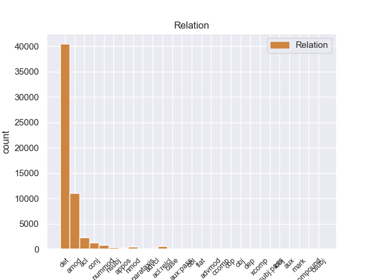
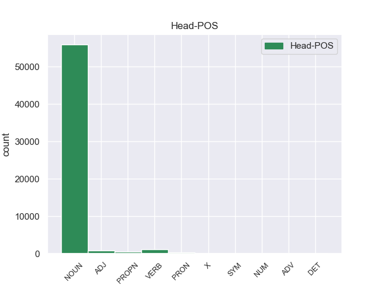
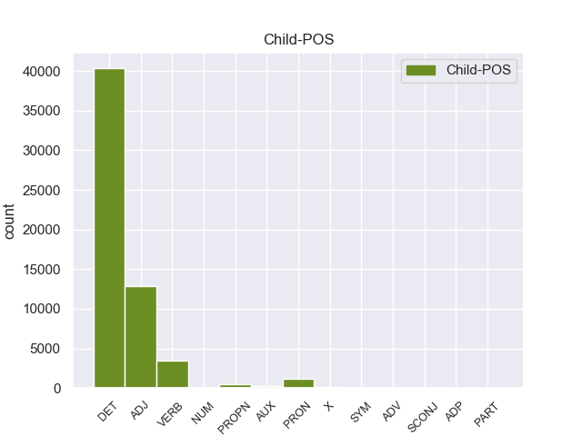

Distribution of features within this leaf



Agreement Rules sorted by frequency.
- When the dependent token is the determiner(det) of the head token, and the dependent token is DET.
1 En _ _ _ _ 0 _ _ _
2 1991 _ _ _ _ 0 _ _ _
3 , _ _ _ _ 0 _ _ _
4 como _ _ _ _ 0 _ _ _
5 ya _ _ _ _ 0 _ _ _
6 está _ _ _ _ 0 _ _ _
7 indicado _ _ _ _ 0 _ _ _
8 en _ _ _ _ 0 _ _ _
9 el _ _ _ _ 0 _ _ _
10 párrafo _ _ _ _ 0 _ _ _
11 anterior _ _ _ _ 0 _ _ _
12 , _ _ _ _ 0 _ _ _
13 se _ _ _ _ 0 _ _ _
14 creó _ _ _ _ 0 _ _ _
15 un _ _ _ _ 0 _ _ _
16 equipo _ _ _ _ 0 _ _ _
17 ad _ _ _ _ 0 _ _ _
18 hoc _ _ _ _ 0 _ _ _
19 para _ _ _ _ 0 _ _ _
20 averiguar _ _ _ _ 0 _ _ _
21 como _ _ _ _ 0 _ _ _
22 se _ _ _ _ 0 _ _ _
23 podía _ _ _ _ 0 _ _ _
24 desarrollar _ _ _ _ 0 _ _ _
25 el _ _ _ _ 0 _ _ _
26 Dialogo _ _ _ _ 0 _ _ _
27 Social _ _ _ _ 0 _ _ _
28 , _ _ _ _ 0 _ _ _
29 este _ _ _ _ 0 _ _ _
30 equipo _ _ _ _ 0 _ _ _
31 estaba _ _ _ _ 0 _ _ _
32 formado _ _ _ _ 0 _ _ _
33 por _ _ _ _ 0 _ _ _
34 representantes _ _ _ _ 0 _ _ _
35 de _ _ _ _ 0 _ _ _
36 todas _ _ _ _ 0 _ _ _
37 las el DET _ Definite=Def|Gender=Fem|Number=Plur|PronType=Art 38 det _ _
38 organizaciones organización NOUN _ Gender=Fem|Number=Plur 0 _ _ _
39 relacionadas _ _ _ _ 0 _ _ _
40 con _ _ _ _ 0 _ _ _
41 CES _ _ _ _ 0 _ _ _
42 , _ _ _ _ 0 _ _ _
43 UNICE _ _ _ _ 0 _ _ _
44 y _ _ _ _ 0 _ _ _
45 CEEP _ _ _ _ 0 _ _ _
46 ; _ _ _ _ 0 _ _ _
1 Esta _ _ _ _ 0 _ _ _
2 teoría _ _ _ _ 0 _ _ _
3 se _ _ _ _ 0 _ _ _
4 avenía _ _ _ _ 0 _ _ _
5 bien _ _ _ _ 0 _ _ _
6 con _ _ _ _ 0 _ _ _
7 la _ _ _ _ 0 _ _ _
8 creencia _ _ _ _ 0 _ _ _
9 de _ _ _ _ 0 _ _ _
10 el _ _ _ _ 0 _ _ _
11 Romanticismo _ _ _ _ 0 _ _ _
12 en _ _ _ _ 0 _ _ _
13 un _ _ _ _ 0 _ _ _
14 volkgeist _ _ _ _ 0 _ _ _
15 , _ _ _ _ 0 _ _ _
16 " _ _ _ _ 0 _ _ _
17 genio _ _ _ _ 0 _ _ _
18 o _ _ _ _ 0 _ _ _
19 espíritu _ _ _ _ 0 _ _ _
20 de _ _ _ _ 0 _ _ _
21 el _ _ _ _ 0 _ _ _
22 pueblo _ _ _ _ 0 _ _ _
23 " _ _ _ _ 0 _ _ _
24 , _ _ _ _ 0 _ _ _
25 autor autor NOUN _ Gender=Masc|Number=Sing 0 _ _ _
26 colectivo colectivo ADJ _ Gender=Masc|Number=Sing 25 amod _ _
27 y _ _ _ _ 0 _ _ _
28 anónimo _ _ _ _ 0 _ _ _
29 de _ _ _ _ 0 _ _ _
30 una _ _ _ _ 0 _ _ _
31 poesía _ _ _ _ 0 _ _ _
32 nacional _ _ _ _ 0 _ _ _
33 . _ _ _ _ 0 _ _ _
1 En _ _ _ _ 0 _ _ _
2 1991 _ _ _ _ 0 _ _ _
3 , _ _ _ _ 0 _ _ _
4 como _ _ _ _ 0 _ _ _
5 ya _ _ _ _ 0 _ _ _
6 está _ _ _ _ 0 _ _ _
7 indicado _ _ _ _ 0 _ _ _
8 en _ _ _ _ 0 _ _ _
9 el _ _ _ _ 0 _ _ _
10 párrafo _ _ _ _ 0 _ _ _
11 anterior _ _ _ _ 0 _ _ _
12 , _ _ _ _ 0 _ _ _
13 se _ _ _ _ 0 _ _ _
14 creó _ _ _ _ 0 _ _ _
15 un _ _ _ _ 0 _ _ _
16 equipo _ _ _ _ 0 _ _ _
17 ad _ _ _ _ 0 _ _ _
18 hoc _ _ _ _ 0 _ _ _
19 para _ _ _ _ 0 _ _ _
20 averiguar _ _ _ _ 0 _ _ _
21 como _ _ _ _ 0 _ _ _
22 se _ _ _ _ 0 _ _ _
23 podía _ _ _ _ 0 _ _ _
24 desarrollar _ _ _ _ 0 _ _ _
25 el _ _ _ _ 0 _ _ _
26 Dialogo _ _ _ _ 0 _ _ _
27 Social _ _ _ _ 0 _ _ _
28 , _ _ _ _ 0 _ _ _
29 este _ _ _ _ 0 _ _ _
30 equipo _ _ _ _ 0 _ _ _
31 estaba _ _ _ _ 0 _ _ _
32 formado _ _ _ _ 0 _ _ _
33 por _ _ _ _ 0 _ _ _
34 representantes _ _ _ _ 0 _ _ _
35 de _ _ _ _ 0 _ _ _
36 todas _ _ _ _ 0 _ _ _
37 las _ _ _ _ 0 _ _ _
38 organizaciones organización NOUN _ Gender=Fem|Number=Plur 0 _ _ _
39 relacionadas relacionado VERB _ Gender=Fem|Number=Plur|VerbForm=Part 38 acl _ _
40 con _ _ _ _ 0 _ _ _
41 CES _ _ _ _ 0 _ _ _
42 , _ _ _ _ 0 _ _ _
43 UNICE _ _ _ _ 0 _ _ _
44 y _ _ _ _ 0 _ _ _
45 CEEP _ _ _ _ 0 _ _ _
46 ; _ _ _ _ 0 _ _ _
1 Ahora _ _ _ _ 0 _ _ _
2 se _ _ _ _ 0 _ _ _
3 aunan _ _ _ _ 0 _ _ _
4 cocina _ _ _ _ 0 _ _ _
5 y _ _ _ _ 0 _ _ _
6 entorno _ _ _ _ 0 _ _ _
7 , _ _ _ _ 0 _ _ _
8 me _ _ _ _ 0 _ _ _
9 encanto _ _ _ _ 0 _ _ _
10 la _ _ _ _ 0 _ _ _
11 bodega _ _ _ _ 0 _ _ _
12 , _ _ _ _ 0 _ _ _
13 las _ _ _ _ 0 _ _ _
14 sillas _ _ _ _ 0 _ _ _
15 son _ _ _ _ 0 _ _ _
16 comodisimas _ _ _ _ 0 _ _ _
17 , _ _ _ _ 0 _ _ _
18 la _ _ _ _ 0 _ _ _
19 iluminacion _ _ _ _ 0 _ _ _
20 es _ _ _ _ 0 _ _ _
21 excepcional _ _ _ _ 0 _ _ _
22 , _ _ _ _ 0 _ _ _
23 alcanzas _ _ _ _ 0 _ _ _
24 un _ _ _ _ 0 _ _ _
25 grado _ _ _ _ 0 _ _ _
26 de _ _ _ _ 0 _ _ _
27 satisfaccion _ _ _ _ 0 _ _ _
28 que _ _ _ _ 0 _ _ _
29 no _ _ _ _ 0 _ _ _
30 se _ _ _ _ 0 _ _ _
31 puede _ _ _ _ 0 _ _ _
32 describir _ _ _ _ 0 _ _ _
33 , _ _ _ _ 0 _ _ _
34 hay _ _ _ _ 0 _ _ _
35 que _ _ _ _ 0 _ _ _
36 probar _ _ _ _ 0 _ _ _
37 lo _ _ _ _ 0 _ _ _
38 , _ _ _ _ 0 _ _ _
39 es _ _ _ _ 0 _ _ _
40 la _ _ _ _ 0 _ _ _
41 primera primero ADJ _ Gender=Fem|Number=Sing|NumType=Ord 42 nummod _ _
42 vez vez NOUN _ Gender=Fem|Number=Sing 0 _ _ _
43 en _ _ _ _ 0 _ _ _
44 mi _ _ _ _ 0 _ _ _
45 vda _ _ _ _ 0 _ _ _
46 que _ _ _ _ 0 _ _ _
47 una _ _ _ _ 0 _ _ _
48 cocina _ _ _ _ 0 _ _ _
49 me _ _ _ _ 0 _ _ _
50 emociona _ _ _ _ 0 _ _ _
51 hasta _ _ _ _ 0 _ _ _
52 ese _ _ _ _ 0 _ _ _
53 punto _ _ _ _ 0 _ _ _
54 . _ _ _ _ 0 _ _ _
1 Esta _ _ _ _ 0 _ _ _
2 teoría _ _ _ _ 0 _ _ _
3 se _ _ _ _ 0 _ _ _
4 avenía _ _ _ _ 0 _ _ _
5 bien _ _ _ _ 0 _ _ _
6 con _ _ _ _ 0 _ _ _
7 la _ _ _ _ 0 _ _ _
8 creencia _ _ _ _ 0 _ _ _
9 de _ _ _ _ 0 _ _ _
10 el _ _ _ _ 0 _ _ _
11 Romanticismo _ _ _ _ 0 _ _ _
12 en _ _ _ _ 0 _ _ _
13 un _ _ _ _ 0 _ _ _
14 volkgeist _ _ _ _ 0 _ _ _
15 , _ _ _ _ 0 _ _ _
16 " _ _ _ _ 0 _ _ _
17 genio _ _ _ _ 0 _ _ _
18 o _ _ _ _ 0 _ _ _
19 espíritu _ _ _ _ 0 _ _ _
20 de _ _ _ _ 0 _ _ _
21 el _ _ _ _ 0 _ _ _
22 pueblo _ _ _ _ 0 _ _ _
23 " _ _ _ _ 0 _ _ _
24 , _ _ _ _ 0 _ _ _
25 autor autor NOUN _ Gender=Masc|Number=Sing 0 _ _ _
26 colectivo _ _ _ _ 0 _ _ _
27 y _ _ _ _ 0 _ _ _
28 anónimo anónimo ADJ _ Gender=Masc|Number=Sing 25 conj _ _
29 de _ _ _ _ 0 _ _ _
30 una _ _ _ _ 0 _ _ _
31 poesía _ _ _ _ 0 _ _ _
32 nacional _ _ _ _ 0 _ _ _
33 . _ _ _ _ 0 _ _ _
1 En _ _ _ _ 0 _ _ _
2 estos _ _ _ _ 0 _ _ _
3 trabajos _ _ _ _ 0 _ _ _
4 se _ _ _ _ 0 _ _ _
5 pusieron _ _ _ _ 0 _ _ _
6 a _ _ _ _ 0 _ _ _
7 el _ _ _ _ 0 _ _ _
8 descubierto _ _ _ _ 0 _ _ _
9 25 _ _ _ _ 0 _ _ _
10 vanos _ _ _ _ 0 _ _ _
11 correspondientes _ _ _ _ 0 _ _ _
12 a _ _ _ _ 0 _ _ _
13 ventanas ventana NOUN _ Gender=Fem|Number=Plur 0 _ _ _
14 saeteras _ _ _ _ 0 _ _ _
15 que _ _ _ _ 0 _ _ _
16 habían _ _ _ _ 0 _ _ _
17 sido _ _ _ _ 0 _ _ _
18 tapiadas tapiada VERB _ Gender=Fem|Number=Plur|VerbForm=Part 13 acl:relcl _ _
19 en _ _ _ _ 0 _ _ _
20 los _ _ _ _ 0 _ _ _
21 siglos _ _ _ _ 0 _ _ _
22 anteriores _ _ _ _ 0 _ _ _
23 . _ _ _ _ 0 _ _ _
1 Jazmin _ _ _ _ 0 _ _ _
2 es _ _ _ _ 0 _ _ _
3 todo _ _ _ _ 0 _ _ _
4 lo _ _ _ _ 0 _ _ _
5 contrario _ _ _ _ 0 _ _ _
6 , _ _ _ _ 0 _ _ _
7 es _ _ _ _ 0 _ _ _
8 tímida tímido ADJ _ Gender=Fem|Number=Sing 0 _ _ _
9 y _ _ _ _ 0 _ _ _
10 callada _ _ _ _ 0 _ _ _
11 , _ _ _ _ 0 _ _ _
12 pero _ _ _ _ 0 _ _ _
13 siempre _ _ _ _ 0 _ _ _
14 es _ _ _ _ 0 _ _ _
15 arrastrada arrastrado VERB _ Gender=Fem|Number=Sing|VerbForm=Part 8 conj _ _
16 por _ _ _ _ 0 _ _ _
17 las _ _ _ _ 0 _ _ _
18 locuras _ _ _ _ 0 _ _ _
19 y _ _ _ _ 0 _ _ _
20 travesuras _ _ _ _ 0 _ _ _
21 que _ _ _ _ 0 _ _ _
22 inventa _ _ _ _ 0 _ _ _
23 Alma _ _ _ _ 0 _ _ _
24 . _ _ _ _ 0 _ _ _
1 A _ _ _ _ 0 _ _ _
2 continuación _ _ _ _ 0 _ _ _
3 , _ _ _ _ 0 _ _ _
4 sonarán _ _ _ _ 0 _ _ _
5 los _ _ _ _ 0 _ _ _
6 ritmos _ _ _ _ 0 _ _ _
7 más _ _ _ _ 0 _ _ _
8 intensos _ _ _ _ 0 _ _ _
9 de _ _ _ _ 0 _ _ _
10 los _ _ _ _ 0 _ _ _
11 llanos _ _ _ _ 0 _ _ _
12 interpretados _ _ _ _ 0 _ _ _
13 por _ _ _ _ 0 _ _ _
14 una _ _ _ _ 0 _ _ _
15 agrupación _ _ _ _ 0 _ _ _
16 que _ _ _ _ 0 _ _ _
17 romperá _ _ _ _ 0 _ _ _
18 esquemas _ _ _ _ 0 _ _ _
19 : _ _ _ _ 0 _ _ _
20 el _ _ _ _ 0 _ _ _
21 Ensamble _ _ _ _ 0 _ _ _
22 de _ _ _ _ 0 _ _ _
23 Arpas _ _ _ _ 0 _ _ _
24 de _ _ _ _ 0 _ _ _
25 la _ _ _ _ 0 _ _ _
26 Orquesta _ _ _ _ 0 _ _ _
27 de _ _ _ _ 0 _ _ _
28 Música _ _ _ _ 0 _ _ _
29 Popular _ _ _ _ 0 _ _ _
30 de _ _ _ _ 0 _ _ _
31 el _ _ _ _ 0 _ _ _
32 Estado _ _ _ _ 0 _ _ _
33 Guárico _ _ _ _ 0 _ _ _
34 , _ _ _ _ 0 _ _ _
35 integrado _ _ _ _ 0 _ _ _
36 por _ _ _ _ 0 _ _ _
37 14 _ _ _ _ 0 _ _ _
38 ejecutantes _ _ _ _ 0 _ _ _
39 , _ _ _ _ 0 _ _ _
40 todos _ _ _ _ 0 _ _ _
41 formados _ _ _ _ 0 _ _ _
42 por _ _ _ _ 0 _ _ _
43 El _ _ _ _ 0 _ _ _
44 Sistema _ _ _ _ 0 _ _ _
45 , _ _ _ _ 0 _ _ _
46 siendo _ _ _ _ 0 _ _ _
47 algunos _ _ _ _ 0 _ _ _
48 de _ _ _ _ 0 _ _ _
49 ellos él PRON _ Case=Acc,Nom|Gender=Masc|Number=Plur|Person=3|PronType=Prs 50 nmod _ _
50 ganadores ganadore NOUN _ Gender=Masc|Number=Plur 0 _ _ _
51 de _ _ _ _ 0 _ _ _
52 el _ _ _ _ 0 _ _ _
53 reconocido _ _ _ _ 0 _ _ _
54 Festival _ _ _ _ 0 _ _ _
55 Internacional _ _ _ _ 0 _ _ _
56 de _ _ _ _ 0 _ _ _
57 Arpas _ _ _ _ 0 _ _ _
58 Infantil _ _ _ _ 0 _ _ _
59 y _ _ _ _ 0 _ _ _
60 Adultos _ _ _ _ 0 _ _ _
61 de _ _ _ _ 0 _ _ _
62 Villavicencio _ _ _ _ 0 _ _ _
63 , _ _ _ _ 0 _ _ _
64 Colombia _ _ _ _ 0 _ _ _
65 . _ _ _ _ 0 _ _ _
1 Jazmin _ _ _ _ 0 _ _ _
2 es _ _ _ _ 0 _ _ _
3 todo _ _ _ _ 0 _ _ _
4 lo él PRON _ Case=Acc|Gender=Masc|Number=Sing|Person=3|PrepCase=Npr|PronType=Prs 5 det _ _
5 contrario contrario ADJ _ Gender=Masc|Number=Sing 0 _ _ _
6 , _ _ _ _ 0 _ _ _
7 es _ _ _ _ 0 _ _ _
8 tímida _ _ _ _ 0 _ _ _
9 y _ _ _ _ 0 _ _ _
10 callada _ _ _ _ 0 _ _ _
11 , _ _ _ _ 0 _ _ _
12 pero _ _ _ _ 0 _ _ _
13 siempre _ _ _ _ 0 _ _ _
14 es _ _ _ _ 0 _ _ _
15 arrastrada _ _ _ _ 0 _ _ _
16 por _ _ _ _ 0 _ _ _
17 las _ _ _ _ 0 _ _ _
18 locuras _ _ _ _ 0 _ _ _
19 y _ _ _ _ 0 _ _ _
20 travesuras _ _ _ _ 0 _ _ _
21 que _ _ _ _ 0 _ _ _
22 inventa _ _ _ _ 0 _ _ _
23 Alma _ _ _ _ 0 _ _ _
24 . _ _ _ _ 0 _ _ _
1 De _ _ _ _ 0 _ _ _
2 la _ _ _ _ 0 _ _ _
3 Vega _ _ _ _ 0 _ _ _
4 ha _ _ _ _ 0 _ _ _
5 pedido pedir VERB _ Gender=Masc|Number=Sing|Tense=Past|VerbForm=Part 0 _ _ _
6 respetar _ _ _ _ 0 _ _ _
7 los _ _ _ _ 0 _ _ _
8 tiempos _ _ _ _ 0 _ _ _
9 de _ _ _ _ 0 _ _ _
10 los _ _ _ _ 0 _ _ _
11 procesos _ _ _ _ 0 _ _ _
12 y _ _ _ _ 0 _ _ _
13 de _ _ _ _ 0 _ _ _
14 la _ _ _ _ 0 _ _ _
15 misma _ _ _ _ 0 _ _ _
16 manera _ _ _ _ 0 _ _ _
17 que _ _ _ _ 0 _ _ _
18 no _ _ _ _ 0 _ _ _
19 ha _ _ _ _ 0 _ _ _
20 querido querir VERB _ Gender=Masc|Number=Sing|Tense=Past|VerbForm=Part 5 advcl _ _
21 entrar _ _ _ _ 0 _ _ _
22 en _ _ _ _ 0 _ _ _
23 la _ _ _ _ 0 _ _ _
24 salida _ _ _ _ 0 _ _ _
25 de _ _ _ _ 0 _ _ _
26 Corbacho _ _ _ _ 0 _ _ _
27 , _ _ _ _ 0 _ _ _
28 tampoco _ _ _ _ 0 _ _ _
29 lo _ _ _ _ 0 _ _ _
30 ha _ _ _ _ 0 _ _ _
31 hecho _ _ _ _ 0 _ _ _
32 la _ _ _ _ 0 _ _ _
33 posible _ _ _ _ 0 _ _ _
34 salida _ _ _ _ 0 _ _ _
35 de _ _ _ _ 0 _ _ _
36 Trinidad _ _ _ _ 0 _ _ _
37 Jiménez _ _ _ _ 0 _ _ _
38 , _ _ _ _ 0 _ _ _
39 que _ _ _ _ 0 _ _ _
40 le _ _ _ _ 0 _ _ _
41 acompañaba _ _ _ _ 0 _ _ _
42 en _ _ _ _ 0 _ _ _
43 la _ _ _ _ 0 _ _ _
44 sala _ _ _ _ 0 _ _ _
45 de _ _ _ _ 0 _ _ _
46 prensa _ _ _ _ 0 _ _ _
47 . _ _ _ _ 0 _ _ _
1 A _ _ _ _ 0 _ _ _
2 continuación _ _ _ _ 0 _ _ _
3 , _ _ _ _ 0 _ _ _
4 sonarán _ _ _ _ 0 _ _ _
5 los _ _ _ _ 0 _ _ _
6 ritmos _ _ _ _ 0 _ _ _
7 más _ _ _ _ 0 _ _ _
8 intensos _ _ _ _ 0 _ _ _
9 de _ _ _ _ 0 _ _ _
10 los _ _ _ _ 0 _ _ _
11 llanos _ _ _ _ 0 _ _ _
12 interpretados _ _ _ _ 0 _ _ _
13 por _ _ _ _ 0 _ _ _
14 una _ _ _ _ 0 _ _ _
15 agrupación _ _ _ _ 0 _ _ _
16 que _ _ _ _ 0 _ _ _
17 romperá _ _ _ _ 0 _ _ _
18 esquemas _ _ _ _ 0 _ _ _
19 : _ _ _ _ 0 _ _ _
20 el _ _ _ _ 0 _ _ _
21 Ensamble _ _ _ _ 0 _ _ _
22 de _ _ _ _ 0 _ _ _
23 Arpas _ _ _ _ 0 _ _ _
24 de _ _ _ _ 0 _ _ _
25 la _ _ _ _ 0 _ _ _
26 Orquesta _ _ _ _ 0 _ _ _
27 de _ _ _ _ 0 _ _ _
28 Música _ _ _ _ 0 _ _ _
29 Popular _ _ _ _ 0 _ _ _
30 de _ _ _ _ 0 _ _ _
31 el _ _ _ _ 0 _ _ _
32 Estado _ _ _ _ 0 _ _ _
33 Guárico _ _ _ _ 0 _ _ _
34 , _ _ _ _ 0 _ _ _
35 integrado _ _ _ _ 0 _ _ _
36 por _ _ _ _ 0 _ _ _
37 14 _ _ _ _ 0 _ _ _
38 ejecutantes _ _ _ _ 0 _ _ _
39 , _ _ _ _ 0 _ _ _
40 todos _ _ _ _ 0 _ _ _
41 formados _ _ _ _ 0 _ _ _
42 por _ _ _ _ 0 _ _ _
43 El _ _ _ _ 0 _ _ _
44 Sistema _ _ _ _ 0 _ _ _
45 , _ _ _ _ 0 _ _ _
46 siendo _ _ _ _ 0 _ _ _
47 algunos alguno PRON _ Gender=Masc|Number=Plur|PronType=Ind 50 nsubj _ _
48 de _ _ _ _ 0 _ _ _
49 ellos _ _ _ _ 0 _ _ _
50 ganadores ganadore NOUN _ Gender=Masc|Number=Plur 0 _ _ _
51 de _ _ _ _ 0 _ _ _
52 el _ _ _ _ 0 _ _ _
53 reconocido _ _ _ _ 0 _ _ _
54 Festival _ _ _ _ 0 _ _ _
55 Internacional _ _ _ _ 0 _ _ _
56 de _ _ _ _ 0 _ _ _
57 Arpas _ _ _ _ 0 _ _ _
58 Infantil _ _ _ _ 0 _ _ _
59 y _ _ _ _ 0 _ _ _
60 Adultos _ _ _ _ 0 _ _ _
61 de _ _ _ _ 0 _ _ _
62 Villavicencio _ _ _ _ 0 _ _ _
63 , _ _ _ _ 0 _ _ _
64 Colombia _ _ _ _ 0 _ _ _
65 . _ _ _ _ 0 _ _ _
1 Con _ _ _ _ 0 _ _ _
2 miras _ _ _ _ 0 _ _ _
3 a _ _ _ _ 0 _ _ _
4 minimizar _ _ _ _ 0 _ _ _
5 cualquier _ _ _ _ 0 _ _ _
6 confusión _ _ _ _ 0 _ _ _
7 con _ _ _ _ 0 _ _ _
8 una _ _ _ _ 0 _ _ _
9 religión _ _ _ _ 0 _ _ _
10 , _ _ _ _ 0 _ _ _
11 el _ _ _ _ 0 _ _ _
12 uso _ _ _ _ 0 _ _ _
13 de _ _ _ _ 0 _ _ _
14 la _ _ _ _ 0 _ _ _
15 palabra _ _ _ _ 0 _ _ _
16 " _ _ _ _ 0 _ _ _
17 templo _ _ _ _ 0 _ _ _
18 " _ _ _ _ 0 _ _ _
19 para _ _ _ _ 0 _ _ _
20 describir _ _ _ _ 0 _ _ _
21 los _ _ _ _ 0 _ _ _
22 inmuebles _ _ _ _ 0 _ _ _
23 de _ _ _ _ 0 _ _ _
24 los _ _ _ _ 0 _ _ _
25 Shriners _ _ _ _ 0 _ _ _
26 ha _ _ _ _ 0 _ _ _
27 sido ser AUX _ Gender=Masc|Number=Sing|Tense=Past|VerbForm=Part 28 aux:pass _ _
28 reemplazado reemplazar VERB _ Gender=Masc|Number=Sing|Tense=Past|VerbForm=Part 0 _ _ _
29 por _ _ _ _ 0 _ _ _
30 la _ _ _ _ 0 _ _ _
31 frase _ _ _ _ 0 _ _ _
32 " _ _ _ _ 0 _ _ _
33 Centro _ _ _ _ 0 _ _ _
34 Shriner _ _ _ _ 0 _ _ _
35 " _ _ _ _ 0 _ _ _
36 , _ _ _ _ 0 _ _ _
37 aunque _ _ _ _ 0 _ _ _
38 en _ _ _ _ 0 _ _ _
39 capítulos _ _ _ _ 0 _ _ _
40 individuales _ _ _ _ 0 _ _ _
41 siguen _ _ _ _ 0 _ _ _
42 siendo _ _ _ _ 0 _ _ _
43 nombrados _ _ _ _ 0 _ _ _
44 como _ _ _ _ 0 _ _ _
45 " _ _ _ _ 0 _ _ _
46 templos _ _ _ _ 0 _ _ _
47 " _ _ _ _ 0 _ _ _
48 . _ _ _ _ 0 _ _ _
1 De _ _ _ _ 0 _ _ _
2 las _ _ _ _ 0 _ _ _
3 8 _ _ _ _ 0 _ _ _
4 porciones _ _ _ _ 0 _ _ _
5 , _ _ _ _ 0 _ _ _
6 cuatro _ _ _ _ 0 _ _ _
7 correspondieron _ _ _ _ 0 _ _ _
8 a _ _ _ _ 0 _ _ _
9 el _ _ _ _ 0 _ _ _
10 rey _ _ _ _ 0 _ _ _
11 , _ _ _ _ 0 _ _ _
12 una uno PRON _ Gender=Fem|Number=Sing|PronType=Ind 0 _ _ _
13 a _ _ _ _ 0 _ _ _
14 el _ _ _ _ 0 _ _ _
15 conde _ _ _ _ 0 _ _ _
16 de _ _ _ _ 0 _ _ _
17 el _ _ _ _ 0 _ _ _
18 Rosellón _ _ _ _ 0 _ _ _
19 Nuño _ _ _ _ 0 _ _ _
20 Sánchez _ _ _ _ 0 _ _ _
21 , _ _ _ _ 0 _ _ _
22 una uno PRON _ Gender=Fem|Number=Sing|PronType=Ind 12 conj _ _
23 a _ _ _ _ 0 _ _ _
24 el _ _ _ _ 0 _ _ _
25 obispo _ _ _ _ 0 _ _ _
26 de _ _ _ _ 0 _ _ _
27 Barcelona _ _ _ _ 0 _ _ _
28 Berenguer _ _ _ _ 0 _ _ _
29 de _ _ _ _ 0 _ _ _
30 Palou _ _ _ _ 0 _ _ _
31 , _ _ _ _ 0 _ _ _
32 una _ _ _ _ 0 _ _ _
33 a _ _ _ _ 0 _ _ _
34 el _ _ _ _ 0 _ _ _
35 Conde _ _ _ _ 0 _ _ _
36 de _ _ _ _ 0 _ _ _
37 Ampurias _ _ _ _ 0 _ _ _
38 y _ _ _ _ 0 _ _ _
39 finalmente _ _ _ _ 0 _ _ _
40 otra _ _ _ _ 0 _ _ _
41 a _ _ _ _ 0 _ _ _
42 el _ _ _ _ 0 _ _ _
43 vizconde _ _ _ _ 0 _ _ _
44 de _ _ _ _ 0 _ _ _
45 Bearn _ _ _ _ 0 _ _ _
46 . _ _ _ _ 0 _ _ _
1 Iglesia iglesia NOUN _ Gender=Fem|Number=Sing 0 _ _ _
2 de _ _ _ _ 0 _ _ _
3 la _ _ _ _ 0 _ _ _
4 Natividad _ _ _ _ 0 _ _ _
5 de _ _ _ _ 0 _ _ _
6 Nuestra _ _ _ _ 0 _ _ _
7 Señora _ _ _ _ 0 _ _ _
8 , _ _ _ _ 0 _ _ _
9 dependiente dependiente ADJ _ Gender=Fem|Number=Sing|VerbForm=Part 1 acl _ _
10 de _ _ _ _ 0 _ _ _
11 la _ _ _ _ 0 _ _ _
12 parroquia _ _ _ _ 0 _ _ _
13 de _ _ _ _ 0 _ _ _
14 Quintanapalla _ _ _ _ 0 _ _ _
15 en _ _ _ _ 0 _ _ _
16 el _ _ _ _ 0 _ _ _
17 Arcipestrazgo _ _ _ _ 0 _ _ _
18 de _ _ _ _ 0 _ _ _
19 San _ _ _ _ 0 _ _ _
20 Juan _ _ _ _ 0 _ _ _
21 de _ _ _ _ 0 _ _ _
22 Ortega _ _ _ _ 0 _ _ _
23 , _ _ _ _ 0 _ _ _
24 diócesis _ _ _ _ 0 _ _ _
25 de _ _ _ _ 0 _ _ _
26 Burgos _ _ _ _ 0 _ _ _
27 . _ _ _ _ 0 _ _ _
1 Mauricio mauricio PROPN _ Gender=Masc|Number=Sing 18 nsubj _ _
2 Bernardo _ _ _ _ 0 _ _ _
3 Victorino _ _ _ _ 0 _ _ _
4 Dansilio _ _ _ _ 0 _ _ _
5 ( _ _ _ _ 0 _ _ _
6 Montevideo _ _ _ _ 0 _ _ _
7 , _ _ _ _ 0 _ _ _
8 Uruguay _ _ _ _ 0 _ _ _
9 , _ _ _ _ 0 _ _ _
10 11 _ _ _ _ 0 _ _ _
11 de _ _ _ _ 0 _ _ _
12 octubre _ _ _ _ 0 _ _ _
13 de _ _ _ _ 0 _ _ _
14 1982 _ _ _ _ 0 _ _ _
15 ) _ _ _ _ 0 _ _ _
16 es _ _ _ _ 0 _ _ _
17 un _ _ _ _ 0 _ _ _
18 futbolista futbolista NOUN _ Gender=Masc|Number=Sing 0 _ _ _
19 uruguayo _ _ _ _ 0 _ _ _
20 . _ _ _ _ 0 _ _ _
1 Consolidada consolidada VERB _ Gender=Fem|Number=Sing|VerbForm=Part 0 _ _ _
2 como _ _ _ _ 0 _ _ _
3 una uno PRON _ Gender=Fem|Number=Sing|PronType=Ind 1 obl _ _
4 de _ _ _ _ 0 _ _ _
5 las _ _ _ _ 0 _ _ _
6 grandes _ _ _ _ 0 _ _ _
7 cadenas _ _ _ _ 0 _ _ _
8 españolas _ _ _ _ 0 _ _ _
9 , _ _ _ _ 0 _ _ _
10 ' _ _ _ _ 0 _ _ _
11 Sercotel _ _ _ _ 0 _ _ _
12 hotels _ _ _ _ 0 _ _ _
13 ' _ _ _ _ 0 _ _ _
14 , _ _ _ _ 0 _ _ _
15 fundada _ _ _ _ 0 _ _ _
16 en _ _ _ _ 0 _ _ _
17 1994 _ _ _ _ 0 _ _ _
18 , _ _ _ _ 0 _ _ _
19 introdujo _ _ _ _ 0 _ _ _
20 en _ _ _ _ 0 _ _ _
21 España _ _ _ _ 0 _ _ _
22 un _ _ _ _ 0 _ _ _
23 nuevo _ _ _ _ 0 _ _ _
24 modelo _ _ _ _ 0 _ _ _
25 de _ _ _ _ 0 _ _ _
26 cadena _ _ _ _ 0 _ _ _
27 hotelera _ _ _ _ 0 _ _ _
28 basada _ _ _ _ 0 _ _ _
29 en _ _ _ _ 0 _ _ _
30 la _ _ _ _ 0 _ _ _
31 comercialización _ _ _ _ 0 _ _ _
32 conjunta _ _ _ _ 0 _ _ _
33 bajo _ _ _ _ 0 _ _ _
34 una _ _ _ _ 0 _ _ _
35 misma _ _ _ _ 0 _ _ _
36 marca _ _ _ _ 0 _ _ _
37 de _ _ _ _ 0 _ _ _
38 hoteles _ _ _ _ 0 _ _ _
39 , _ _ _ _ 0 _ _ _
40 cuya _ _ _ _ 0 _ _ _
41 explotación _ _ _ _ 0 _ _ _
42 pertenece _ _ _ _ 0 _ _ _
43 a _ _ _ _ 0 _ _ _
44 diferentes _ _ _ _ 0 _ _ _
45 propietarios _ _ _ _ 0 _ _ _
46 , _ _ _ _ 0 _ _ _
47 permitiéndo _ _ _ _ 0 _ _ _
48 les _ _ _ _ 0 _ _ _
49 competir _ _ _ _ 0 _ _ _
50 contra _ _ _ _ 0 _ _ _
51 las _ _ _ _ 0 _ _ _
52 cadenas _ _ _ _ 0 _ _ _
53 en _ _ _ _ 0 _ _ _
54 igualdad _ _ _ _ 0 _ _ _
55 de _ _ _ _ 0 _ _ _
56 condiciones _ _ _ _ 0 _ _ _
57 , _ _ _ _ 0 _ _ _
58 lo _ _ _ _ 0 _ _ _
59 que _ _ _ _ 0 _ _ _
60 le _ _ _ _ 0 _ _ _
61 ha _ _ _ _ 0 _ _ _
62 llevado _ _ _ _ 0 _ _ _
63 a _ _ _ _ 0 _ _ _
64 convertir _ _ _ _ 0 _ _ _
65 se _ _ _ _ 0 _ _ _
66 hoy _ _ _ _ 0 _ _ _
67 en _ _ _ _ 0 _ _ _
68 día _ _ _ _ 0 _ _ _
69 en _ _ _ _ 0 _ _ _
70 el _ _ _ _ 0 _ _ _
71 segundo _ _ _ _ 0 _ _ _
72 emblema _ _ _ _ 0 _ _ _
73 con _ _ _ _ 0 _ _ _
74 mayor _ _ _ _ 0 _ _ _
75 oferta _ _ _ _ 0 _ _ _
76 de _ _ _ _ 0 _ _ _
77 hoteles _ _ _ _ 0 _ _ _
78 urbanos _ _ _ _ 0 _ _ _
79 en _ _ _ _ 0 _ _ _
80 España _ _ _ _ 0 _ _ _
81 . _ _ _ _ 0 _ _ _
1 Vsévolod _ _ _ _ 0 _ _ _
2 , _ _ _ _ 0 _ _ _
3 sin _ _ _ _ 0 _ _ _
4 embargo _ _ _ _ 0 _ _ _
5 , _ _ _ _ 0 _ _ _
6 expulsó _ _ _ _ 0 _ _ _
7 a _ _ _ _ 0 _ _ _
8 Yaroslav _ _ _ _ 0 _ _ _
9 Vsévolodovich _ _ _ _ 0 _ _ _
10 de _ _ _ _ 0 _ _ _
11 Pereyaslavl _ _ _ _ 0 _ _ _
12 , _ _ _ _ 0 _ _ _
13 y _ _ _ _ 0 _ _ _
14 en _ _ _ _ 0 _ _ _
15 septiembre _ _ _ _ 0 _ _ _
16 , _ _ _ _ 0 _ _ _
17 volvió _ _ _ _ 0 _ _ _
18 con _ _ _ _ 0 _ _ _
19 su _ _ _ _ 0 _ _ _
20 padre padre NOUN _ Gender=Masc|Number=Sing 0 _ _ _
21 ( _ _ _ _ 0 _ _ _
22 el _ _ _ _ 0 _ _ _
23 Gran _ _ _ _ 0 _ _ _
24 Príncipe príncipe PROPN _ Gender=Masc|Number=Sing 20 appos _ _
25 Vsévolod _ _ _ _ 0 _ _ _
26 III _ _ _ _ 0 _ _ _
27 Yúrievich _ _ _ _ 0 _ _ _
28 ) _ _ _ _ 0 _ _ _
29 en _ _ _ _ 0 _ _ _
30 Súzdalia _ _ _ _ 0 _ _ _
31 . _ _ _ _ 0 _ _ _
1 Está _ _ _ _ 0 _ _ _
2 considerado considerar VERB _ Gender=Masc|Number=Sing|Tense=Past|VerbForm=Part 3 cop _ _
3 uno uno PRON _ Gender=Masc|Number=Sing|PronType=Ind 0 _ _ _
4 de _ _ _ _ 0 _ _ _
5 los _ _ _ _ 0 _ _ _
6 mejores _ _ _ _ 0 _ _ _
7 jugadores _ _ _ _ 0 _ _ _
8 de _ _ _ _ 0 _ _ _
9 la _ _ _ _ 0 _ _ _
10 historia _ _ _ _ 0 _ _ _
11 de _ _ _ _ 0 _ _ _
12 Dinamarca _ _ _ _ 0 _ _ _
13 , _ _ _ _ 0 _ _ _
14 junto _ _ _ _ 0 _ _ _
15 a _ _ _ _ 0 _ _ _
16 otras _ _ _ _ 0 _ _ _
17 grandes _ _ _ _ 0 _ _ _
18 estrellas _ _ _ _ 0 _ _ _
19 como _ _ _ _ 0 _ _ _
20 Michael _ _ _ _ 0 _ _ _
21 Laudrup _ _ _ _ 0 _ _ _
22 , _ _ _ _ 0 _ _ _
23 Peter _ _ _ _ 0 _ _ _
24 Schmeichel _ _ _ _ 0 _ _ _
25 o _ _ _ _ 0 _ _ _
26 Allan _ _ _ _ 0 _ _ _
27 Simonsen _ _ _ _ 0 _ _ _
28 . _ _ _ _ 0 _ _ _
1 Todos _ _ _ _ 0 _ _ _
2 vós vó PROPN _ Gender=Masc|Number=Plur 4 amod _ _
3 vodes _ _ _ _ 0 _ _ _
4 capitáns capitán NOUN _ Gender=Masc|Number=Plur 0 _ _ _
5 es _ _ _ _ 0 _ _ _
6 una _ _ _ _ 0 _ _ _
7 película _ _ _ _ 0 _ _ _
8 de _ _ _ _ 0 _ _ _
9 el _ _ _ _ 0 _ _ _
10 año _ _ _ _ 0 _ _ _
11 2010 _ _ _ _ 0 _ _ _
12 . _ _ _ _ 0 _ _ _
1 Me _ _ _ _ 0 _ _ _
2 lo él PRON _ Case=Acc|Gender=Masc|Number=Sing|Person=3|PrepCase=Npr|PronType=Prs 3 obj _ _
3 pasé pasar VERB _ Gender=Masc|Number=Sing|VerbForm=Fin 0 _ _ _
4 muy _ _ _ _ 0 _ _ _
5 bien _ _ _ _ 0 _ _ _
6 currando _ _ _ _ 0 _ _ _
7 allí _ _ _ _ 0 _ _ _
8 . _ _ _ _ 0 _ _ _
1 El _ _ _ _ 0 _ _ _
2 representante _ _ _ _ 0 _ _ _
3 de _ _ _ _ 0 _ _ _
4 el _ _ _ _ 0 _ _ _
5 Frente _ _ _ _ 0 _ _ _
6 Cívico _ _ _ _ 0 _ _ _
7 en _ _ _ _ 0 _ _ _
8 Tribunal _ _ _ _ 0 _ _ _
9 de _ _ _ _ 0 _ _ _
10 Cuentas _ _ _ _ 0 _ _ _
11 de _ _ _ _ 0 _ _ _
12 la _ _ _ _ 0 _ _ _
13 provincia _ _ _ _ 0 _ _ _
14 de _ _ _ _ 0 _ _ _
15 Córdoba _ _ _ _ 0 _ _ _
16 , _ _ _ _ 0 _ _ _
17 José _ _ _ _ 0 _ _ _
18 Medina _ _ _ _ 0 _ _ _
19 , _ _ _ _ 0 _ _ _
20 denunció _ _ _ _ 0 _ _ _
21 que _ _ _ _ 0 _ _ _
22 el _ _ _ _ 0 _ _ _
23 gobierno _ _ _ _ 0 _ _ _
24 de _ _ _ _ 0 _ _ _
25 Schiaretti _ _ _ _ 0 _ _ _
26 pidió _ _ _ _ 0 _ _ _
27 autorización _ _ _ _ 0 _ _ _
28 para _ _ _ _ 0 _ _ _
29 realizar _ _ _ _ 0 _ _ _
30 reparaciones _ _ _ _ 0 _ _ _
31 en _ _ _ _ 0 _ _ _
32 la _ _ _ _ 0 _ _ _
33 Casa _ _ _ _ 0 _ _ _
34 de _ _ _ _ 0 _ _ _
35 las _ _ _ _ 0 _ _ _
36 Tejas _ _ _ _ 0 _ _ _
37 por _ _ _ _ 0 _ _ _
38 más _ _ _ _ 0 _ _ _
39 de _ _ _ _ 0 _ _ _
40 un uno NUM _ Definite=Ind|Gender=Masc|Number=Sing|PronType=Art 41 nummod _ _
41 millón millón NOUN _ Gender=Masc|Number=Sing 0 _ _ _
42 de _ _ _ _ 0 _ _ _
43 pesos _ _ _ _ 0 _ _ _
44 el _ _ _ _ 0 _ _ _
45 pasado _ _ _ _ 0 _ _ _
46 19 _ _ _ _ 0 _ _ _
47 de _ _ _ _ 0 _ _ _
48 octubre _ _ _ _ 0 _ _ _
49 , _ _ _ _ 0 _ _ _
50 cuando _ _ _ _ 0 _ _ _
51 ya _ _ _ _ 0 _ _ _
52 estaba _ _ _ _ 0 _ _ _
53 la _ _ _ _ 0 _ _ _
54 decisión _ _ _ _ 0 _ _ _
55 de _ _ _ _ 0 _ _ _
56 demoler _ _ _ _ 0 _ _ _
57 el _ _ _ _ 0 _ _ _
58 edificio _ _ _ _ 0 _ _ _
59 . _ _ _ _ 0 _ _ _
1 De _ _ _ _ 0 _ _ _
2 los _ _ _ _ 0 _ _ _
3 714 _ _ _ _ 0 _ _ _
4 habitantes _ _ _ _ 0 _ _ _
5 , _ _ _ _ 0 _ _ _
6 el _ _ _ _ 0 _ _ _
7 municipio _ _ _ _ 0 _ _ _
8 de _ _ _ _ 0 _ _ _
9 Daggett _ _ _ _ 0 _ _ _
10 estaba _ _ _ _ 0 _ _ _
11 compuesto compuesto VERB _ Gender=Masc|Number=Sing|VerbForm=Part 0 _ _ _
12 por _ _ _ _ 0 _ _ _
13 el _ _ _ _ 0 _ _ _
14 93.28 _ _ _ _ 0 _ _ _
15 % _ _ _ _ 0 _ _ _
16 blancos _ _ _ _ 0 _ _ _
17 , _ _ _ _ 0 _ _ _
18 el _ _ _ _ 0 _ _ _
19 2.38 _ _ _ _ 0 _ _ _
20 % _ _ _ _ 0 _ _ _
21 eran _ _ _ _ 0 _ _ _
22 afroamericanos afroamericano ADJ _ Gender=Masc|Number=Plur 11 parataxis _ _
23 , _ _ _ _ 0 _ _ _
24 el _ _ _ _ 0 _ _ _
25 0.84 _ _ _ _ 0 _ _ _
26 % _ _ _ _ 0 _ _ _
27 eran _ _ _ _ 0 _ _ _
28 amerindios _ _ _ _ 0 _ _ _
29 , _ _ _ _ 0 _ _ _
30 el _ _ _ _ 0 _ _ _
31 0.56 _ _ _ _ 0 _ _ _
32 % _ _ _ _ 0 _ _ _
33 eran _ _ _ _ 0 _ _ _
34 asiáticos _ _ _ _ 0 _ _ _
35 , _ _ _ _ 0 _ _ _
36 el _ _ _ _ 0 _ _ _
37 0 _ _ _ _ 0 _ _ _
38 % _ _ _ _ 0 _ _ _
39 eran _ _ _ _ 0 _ _ _
40 isleños _ _ _ _ 0 _ _ _
41 de _ _ _ _ 0 _ _ _
42 el _ _ _ _ 0 _ _ _
43 Pacífico _ _ _ _ 0 _ _ _
44 , _ _ _ _ 0 _ _ _
45 el _ _ _ _ 0 _ _ _
46 0.84 _ _ _ _ 0 _ _ _
47 % _ _ _ _ 0 _ _ _
48 eran _ _ _ _ 0 _ _ _
49 de _ _ _ _ 0 _ _ _
50 otras _ _ _ _ 0 _ _ _
51 razas _ _ _ _ 0 _ _ _
52 y _ _ _ _ 0 _ _ _
53 el _ _ _ _ 0 _ _ _
54 2.1 _ _ _ _ 0 _ _ _
55 % _ _ _ _ 0 _ _ _
56 pertenecían _ _ _ _ 0 _ _ _
57 a _ _ _ _ 0 _ _ _
58 dos _ _ _ _ 0 _ _ _
59 o _ _ _ _ 0 _ _ _
60 más _ _ _ _ 0 _ _ _
61 razas _ _ _ _ 0 _ _ _
62 . _ _ _ _ 0 _ _ _
1 La _ _ _ _ 0 _ _ _
2 Cabeza _ _ _ _ 0 _ _ _
3 Mediana _ _ _ _ 0 _ _ _
4 se _ _ _ _ 0 _ _ _
5 halla _ _ _ _ 0 _ _ _
6 a _ _ _ _ 0 _ _ _
7 el _ _ _ _ 0 _ _ _
8 norte _ _ _ _ 0 _ _ _
9 de _ _ _ _ 0 _ _ _
10 el _ _ _ _ 0 _ _ _
11 arroyo _ _ _ _ 0 _ _ _
12 de _ _ _ _ 0 _ _ _
13 Angostura _ _ _ _ 0 _ _ _
14 , _ _ _ _ 0 _ _ _
15 una uno PRON _ Gender=Fem|Number=Sing|PronType=Ind 18 appos _ _
16 de _ _ _ _ 0 _ _ _
17 las _ _ _ _ 0 _ _ _
18 corrientes corriente NOUN _ Gender=Fem|Number=Plur 0 _ _ _
19 fluviales _ _ _ _ 0 _ _ _
20 que _ _ _ _ 0 _ _ _
21 forman _ _ _ _ 0 _ _ _
22 el _ _ _ _ 0 _ _ _
23 río _ _ _ _ 0 _ _ _
24 Lozoya _ _ _ _ 0 _ _ _
25 , _ _ _ _ 0 _ _ _
26 y _ _ _ _ 0 _ _ _
27 a _ _ _ _ 0 _ _ _
28 el _ _ _ _ 0 _ _ _
29 sur _ _ _ _ 0 _ _ _
30 de _ _ _ _ 0 _ _ _
31 el _ _ _ _ 0 _ _ _
32 Monasterio _ _ _ _ 0 _ _ _
33 de _ _ _ _ 0 _ _ _
34 El _ _ _ _ 0 _ _ _
35 Paular _ _ _ _ 0 _ _ _
36 , _ _ _ _ 0 _ _ _
37 de _ _ _ _ 0 _ _ _
38 el _ _ _ _ 0 _ _ _
39 que _ _ _ _ 0 _ _ _
40 le _ _ _ _ 0 _ _ _
41 separan _ _ _ _ 0 _ _ _
42 unos _ _ _ _ 0 _ _ _
43 cinco _ _ _ _ 0 _ _ _
44 kilómetros _ _ _ _ 0 _ _ _
45 . _ _ _ _ 0 _ _ _
1 Joramun _ _ _ _ 0 _ _ _
2 se _ _ _ _ 0 _ _ _
3 supone _ _ _ _ 0 _ _ _
4 que _ _ _ _ 0 _ _ _
5 era _ _ _ _ 0 _ _ _
6 un _ _ _ _ 0 _ _ _
7 legendario _ _ _ _ 0 _ _ _
8 Rey _ _ _ _ 0 _ _ _
9 - _ _ _ _ 0 _ _ _
10 Más _ _ _ _ 0 _ _ _
11 - _ _ _ _ 0 _ _ _
12 Allá _ _ _ _ 0 _ _ _
13 - _ _ _ _ 0 _ _ _
14 de _ _ _ _ 0 _ _ _
15 el _ _ _ _ 0 _ _ _
16 - _ _ _ _ 0 _ _ _
17 Muro _ _ _ _ 0 _ _ _
18 , _ _ _ _ 0 _ _ _
19 a _ _ _ _ 0 _ _ _
20 el _ _ _ _ 0 _ _ _
21 norte norte NOUN _ Gender=Masc|Number=Sing 0 _ _ _
22 de _ _ _ _ 0 _ _ _
23 los _ _ _ _ 0 _ _ _
24 Siete _ _ _ _ 0 _ _ _
25 Reinos reino PROPN _ Gender=Masc|Number=Plur 21 nmod _ _
26 . _ _ _ _ 0 _ _ _
1 En _ _ _ _ 0 _ _ _
2 campo _ _ _ _ 0 _ _ _
3 de _ _ _ _ 0 _ _ _
4 plata _ _ _ _ 0 _ _ _
5 , _ _ _ _ 0 _ _ _
6 tres _ _ _ _ 0 _ _ _
7 castillos _ _ _ _ 0 _ _ _
8 mal _ _ _ _ 0 _ _ _
9 ordenados _ _ _ _ 0 _ _ _
10 , _ _ _ _ 0 _ _ _
11 de _ _ _ _ 0 _ _ _
12 su _ _ _ _ 0 _ _ _
13 color _ _ _ _ 0 _ _ _
14 , _ _ _ _ 0 _ _ _
15 apoyado _ _ _ _ 0 _ _ _
16 el _ _ _ _ 0 _ _ _
17 superior _ _ _ _ 0 _ _ _
18 sobre _ _ _ _ 0 _ _ _
19 los _ _ _ _ 0 _ _ _
20 otros _ _ _ _ 0 _ _ _
21 dos _ _ _ _ 0 _ _ _
22 y _ _ _ _ 0 _ _ _
23 sumado _ _ _ _ 0 _ _ _
24 de _ _ _ _ 0 _ _ _
25 un _ _ _ _ 0 _ _ _
26 murciélago _ _ _ _ 0 _ _ _
27 , _ _ _ _ 0 _ _ _
28 de _ _ _ _ 0 _ _ _
29 sable sable NOUN _ Gender=Masc|Number=Sing 0 _ _ _
30 ( _ _ _ _ 0 _ _ _
31 negro negro ADJ _ Gender=Masc|Number=Sing 29 appos _ _
32 ) _ _ _ _ 0 _ _ _
33 . _ _ _ _ 0 _ _ _
1 Mauricio mauricio PROPN _ Gender=Masc|Number=Sing 0 _ _ _
2 Bernardo bernardo PROPN _ Gender=Masc|Number=Sing 1 flat _ _
3 Victorino _ _ _ _ 0 _ _ _
4 Dansilio _ _ _ _ 0 _ _ _
5 ( _ _ _ _ 0 _ _ _
6 Montevideo _ _ _ _ 0 _ _ _
7 , _ _ _ _ 0 _ _ _
8 Uruguay _ _ _ _ 0 _ _ _
9 , _ _ _ _ 0 _ _ _
10 11 _ _ _ _ 0 _ _ _
11 de _ _ _ _ 0 _ _ _
12 octubre _ _ _ _ 0 _ _ _
13 de _ _ _ _ 0 _ _ _
14 1982 _ _ _ _ 0 _ _ _
15 ) _ _ _ _ 0 _ _ _
16 es _ _ _ _ 0 _ _ _
17 un _ _ _ _ 0 _ _ _
18 futbolista _ _ _ _ 0 _ _ _
19 uruguayo _ _ _ _ 0 _ _ _
20 . _ _ _ _ 0 _ _ _
1 Don _ _ _ _ 0 _ _ _
2 Diego _ _ _ _ 0 _ _ _
3 de _ _ _ _ 0 _ _ _
4 Montemayor _ _ _ _ 0 _ _ _
5 es _ _ _ _ 0 _ _ _
6 considerado _ _ _ _ 0 _ _ _
7 uno _ _ _ _ 0 _ _ _
8 de _ _ _ _ 0 _ _ _
9 los _ _ _ _ 0 _ _ _
10 padres _ _ _ _ 0 _ _ _
11 de _ _ _ _ 0 _ _ _
12 Nuevo _ _ _ _ 0 _ _ _
13 León _ _ _ _ 0 _ _ _
14 , _ _ _ _ 0 _ _ _
15 no _ _ _ _ 0 _ _ _
16 solo _ _ _ _ 0 _ _ _
17 por _ _ _ _ 0 _ _ _
18 haber _ _ _ _ 0 _ _ _
19 sido ser AUX _ Gender=Masc|Number=Sing|Tense=Past|VerbForm=Part 20 cop _ _
20 uno uno PRON _ Gender=Masc|Number=Sing|PronType=Ind 0 _ _ _
21 de _ _ _ _ 0 _ _ _
22 los _ _ _ _ 0 _ _ _
23 primeros _ _ _ _ 0 _ _ _
24 gobernadores _ _ _ _ 0 _ _ _
25 de _ _ _ _ 0 _ _ _
26 el _ _ _ _ 0 _ _ _
27 Nuevo _ _ _ _ 0 _ _ _
28 Reino _ _ _ _ 0 _ _ _
29 de _ _ _ _ 0 _ _ _
30 León _ _ _ _ 0 _ _ _
31 , _ _ _ _ 0 _ _ _
32 sino _ _ _ _ 0 _ _ _
33 que _ _ _ _ 0 _ _ _
34 habiéndo _ _ _ _ 0 _ _ _
35 se _ _ _ _ 0 _ _ _
36 asentado _ _ _ _ 0 _ _ _
37 en _ _ _ _ 0 _ _ _
38 esa _ _ _ _ 0 _ _ _
39 ciudad _ _ _ _ 0 _ _ _
40 , _ _ _ _ 0 _ _ _
41 dejó _ _ _ _ 0 _ _ _
42 su _ _ _ _ 0 _ _ _
43 descendencia _ _ _ _ 0 _ _ _
44 en _ _ _ _ 0 _ _ _
45 esas _ _ _ _ 0 _ _ _
46 tierras _ _ _ _ 0 _ _ _
47 norteñas _ _ _ _ 0 _ _ _
48 . _ _ _ _ 0 _ _ _
1 Un _ _ _ _ 0 _ _ _
2 circuito _ _ _ _ 0 _ _ _
3 equivalente _ _ _ _ 0 _ _ _
4 es _ _ _ _ 0 _ _ _
5 un _ _ _ _ 0 _ _ _
6 circuito _ _ _ _ 0 _ _ _
7 que _ _ _ _ 0 _ _ _
8 conserva _ _ _ _ 0 _ _ _
9 todas _ _ _ _ 0 _ _ _
10 las _ _ _ _ 0 _ _ _
11 características _ _ _ _ 0 _ _ _
12 eléctricas _ _ _ _ 0 _ _ _
13 de _ _ _ _ 0 _ _ _
14 un _ _ _ _ 0 _ _ _
15 circuito circuito NOUN _ Gender=Masc|Number=Sing 0 _ _ _
16 dado dado VERB _ Gender=Masc|Number=Sing|VerbForm=Part 15 amod _ _
17 . _ _ _ _ 0 _ _ _
1 En _ _ _ _ 0 _ _ _
2 1991 _ _ _ _ 0 _ _ _
3 , _ _ _ _ 0 _ _ _
4 como _ _ _ _ 0 _ _ _
5 ya _ _ _ _ 0 _ _ _
6 está _ _ _ _ 0 _ _ _
7 indicado _ _ _ _ 0 _ _ _
8 en _ _ _ _ 0 _ _ _
9 el _ _ _ _ 0 _ _ _
10 párrafo _ _ _ _ 0 _ _ _
11 anterior _ _ _ _ 0 _ _ _
12 , _ _ _ _ 0 _ _ _
13 se _ _ _ _ 0 _ _ _
14 creó _ _ _ _ 0 _ _ _
15 un _ _ _ _ 0 _ _ _
16 equipo equipo NOUN _ Gender=Masc|Number=Sing 0 _ _ _
17 ad _ _ _ _ 0 _ _ _
18 hoc hoc ADJ _ Gender=Masc|Number=Sing 16 nmod _ _
19 para _ _ _ _ 0 _ _ _
20 averiguar _ _ _ _ 0 _ _ _
21 como _ _ _ _ 0 _ _ _
22 se _ _ _ _ 0 _ _ _
23 podía _ _ _ _ 0 _ _ _
24 desarrollar _ _ _ _ 0 _ _ _
25 el _ _ _ _ 0 _ _ _
26 Dialogo _ _ _ _ 0 _ _ _
27 Social _ _ _ _ 0 _ _ _
28 , _ _ _ _ 0 _ _ _
29 este _ _ _ _ 0 _ _ _
30 equipo _ _ _ _ 0 _ _ _
31 estaba _ _ _ _ 0 _ _ _
32 formado _ _ _ _ 0 _ _ _
33 por _ _ _ _ 0 _ _ _
34 representantes _ _ _ _ 0 _ _ _
35 de _ _ _ _ 0 _ _ _
36 todas _ _ _ _ 0 _ _ _
37 las _ _ _ _ 0 _ _ _
38 organizaciones _ _ _ _ 0 _ _ _
39 relacionadas _ _ _ _ 0 _ _ _
40 con _ _ _ _ 0 _ _ _
41 CES _ _ _ _ 0 _ _ _
42 , _ _ _ _ 0 _ _ _
43 UNICE _ _ _ _ 0 _ _ _
44 y _ _ _ _ 0 _ _ _
45 CEEP _ _ _ _ 0 _ _ _
46 ; _ _ _ _ 0 _ _ _
1 En _ _ _ _ 0 _ _ _
2 cambio _ _ _ _ 0 _ _ _
3 hay _ _ _ _ 0 _ _ _
4 personas persona NOUN _ Gender=Fem|Number=Plur 0 _ _ _
5 con _ _ _ _ 0 _ _ _
6 convincentes _ _ _ _ 0 _ _ _
7 argumentos _ _ _ _ 0 _ _ _
8 racionales _ _ _ _ 0 _ _ _
9 extraídas _ _ _ _ 0 _ _ _
10 de _ _ _ _ 0 _ _ _
11 los _ _ _ _ 0 _ _ _
12 escépticos _ _ _ _ 0 _ _ _
13 que _ _ _ _ 0 _ _ _
14 afirman _ _ _ _ 0 _ _ _
15 que _ _ _ _ 0 _ _ _
16 la _ _ _ _ 0 _ _ _
17 única _ _ _ _ 0 _ _ _
18 verdad _ _ _ _ 0 _ _ _
19 está _ _ _ _ 0 _ _ _
20 en _ _ _ _ 0 _ _ _
21 el _ _ _ _ 0 _ _ _
22 Apocalipsis _ _ _ _ 0 _ _ _
23 , _ _ _ _ 0 _ _ _
24 pero _ _ _ _ 0 _ _ _
25 no _ _ _ _ 0 _ _ _
26 tienen _ _ _ _ 0 _ _ _
27 interés _ _ _ _ 0 _ _ _
28 en _ _ _ _ 0 _ _ _
29 las _ _ _ _ 0 _ _ _
30 verdades _ _ _ _ 0 _ _ _
31 religiosas _ _ _ _ 0 _ _ _
32 en _ _ _ _ 0 _ _ _
33 sí _ _ _ _ 0 _ _ _
34 , _ _ _ _ 0 _ _ _
35 sino _ _ _ _ 0 _ _ _
36 que _ _ _ _ 0 _ _ _
37 las _ _ _ _ 0 _ _ _
38 declaraciones _ _ _ _ 0 _ _ _
39 de _ _ _ _ 0 _ _ _
40 fe _ _ _ _ 0 _ _ _
41 de _ _ _ _ 0 _ _ _
42 los _ _ _ _ 0 _ _ _
43 libertinos _ _ _ _ 0 _ _ _
44 parecen _ _ _ _ 0 _ _ _
45 más _ _ _ _ 0 _ _ _
46 herramientas herramienta ADJ _ Gender=Fem|Number=Plur 4 acl:relcl _ _
47 para _ _ _ _ 0 _ _ _
48 evitar _ _ _ _ 0 _ _ _
49 la _ _ _ _ 0 _ _ _
50 persecución _ _ _ _ 0 _ _ _
51 y _ _ _ _ 0 _ _ _
52 tribulaciones _ _ _ _ 0 _ _ _
53 . _ _ _ _ 0 _ _ _
1 Y _ _ _ _ 0 _ _ _
2 a _ _ _ _ 0 _ _ _
3 una uno DET _ Definite=Ind|Gender=Fem|Number=Sing|PronType=Art 4 nummod _ _
4 hora hora NOUN _ Gender=Fem|Number=Sing 0 _ _ _
5 por _ _ _ _ 0 _ _ _
6 autopista _ _ _ _ 0 _ _ _
7 de _ _ _ _ 0 _ _ _
8 Sevilla _ _ _ _ 0 _ _ _
9 y _ _ _ _ 0 _ _ _
10 su _ _ _ _ 0 _ _ _
11 aeropuerto _ _ _ _ 0 _ _ _
12 internacional _ _ _ _ 0 _ _ _
13 , _ _ _ _ 0 _ _ _
14 así _ _ _ _ 0 _ _ _
15 como _ _ _ _ 0 _ _ _
16 de _ _ _ _ 0 _ _ _
17 su _ _ _ _ 0 _ _ _
18 Tren _ _ _ _ 0 _ _ _
19 de _ _ _ _ 0 _ _ _
20 Alta _ _ _ _ 0 _ _ _
21 Velocidad _ _ _ _ 0 _ _ _
22 ( _ _ _ _ 0 _ _ _
23 AVE _ _ _ _ 0 _ _ _
24 ) _ _ _ _ 0 _ _ _
25 . _ _ _ _ 0 _ _ _
1 Anderton _ _ _ _ 0 _ _ _
2 entonces _ _ _ _ 0 _ _ _
3 revela _ _ _ _ 0 _ _ _
4 que _ _ _ _ 0 _ _ _
5 ella él PRON _ Case=Acc,Nom|Gender=Fem|Number=Sing|Person=3|PronType=Prs 7 nsubj:pass _ _
6 fue _ _ _ _ 0 _ _ _
7 asesinada asesinado VERB _ Gender=Fem|Number=Sing|Tense=Past|VerbForm=Part 0 _ _ _
8 ya _ _ _ _ 0 _ _ _
9 que _ _ _ _ 0 _ _ _
10 quería _ _ _ _ 0 _ _ _
11 que _ _ _ _ 0 _ _ _
12 le _ _ _ _ 0 _ _ _
13 regresaran _ _ _ _ 0 _ _ _
14 a _ _ _ _ 0 _ _ _
15 Agatha _ _ _ _ 0 _ _ _
16 , _ _ _ _ 0 _ _ _
17 esto _ _ _ _ 0 _ _ _
18 haría _ _ _ _ 0 _ _ _
19 que _ _ _ _ 0 _ _ _
20 el _ _ _ _ 0 _ _ _
21 sistema _ _ _ _ 0 _ _ _
22 fuera _ _ _ _ 0 _ _ _
23 inútil _ _ _ _ 0 _ _ _
24 y _ _ _ _ 0 _ _ _
25 PreCrimen _ _ _ _ 0 _ _ _
26 sería _ _ _ _ 0 _ _ _
27 descontinuado _ _ _ _ 0 _ _ _
28 . _ _ _ _ 0 _ _ _
1 Se _ _ _ _ 0 _ _ _
2 dice _ _ _ _ 0 _ _ _
3 que _ _ _ _ 0 _ _ _
4 un _ _ _ _ 0 _ _ _
5 sistema _ _ _ _ 0 _ _ _
6 criptográfico _ _ _ _ 0 _ _ _
7 tiene _ _ _ _ 0 _ _ _
8 una _ _ _ _ 0 _ _ _
9 seguridad seguridad NOUN _ Gender=Fem|Number=Sing 0 _ _ _
10 incondicional _ _ _ _ 0 _ _ _
11 ( _ _ _ _ 0 _ _ _
12 en _ _ _ _ 0 _ _ _
13 inglés _ _ _ _ 0 _ _ _
14 unconditional _ _ _ _ 0 _ _ _
15 security security X _ Gender=Fem|Number=Sing 9 appos _ _
16 ) _ _ _ _ 0 _ _ _
17 sobre _ _ _ _ 0 _ _ _
18 cierta _ _ _ _ 0 _ _ _
19 tarea _ _ _ _ 0 _ _ _
20 si _ _ _ _ 0 _ _ _
21 un _ _ _ _ 0 _ _ _
22 atacante _ _ _ _ 0 _ _ _
23 no _ _ _ _ 0 _ _ _
24 puede _ _ _ _ 0 _ _ _
25 resolver _ _ _ _ 0 _ _ _
26 la _ _ _ _ 0 _ _ _
27 tarea _ _ _ _ 0 _ _ _
28 aunque _ _ _ _ 0 _ _ _
29 tenga _ _ _ _ 0 _ _ _
30 infinito _ _ _ _ 0 _ _ _
31 poder _ _ _ _ 0 _ _ _
32 computacional _ _ _ _ 0 _ _ _
33 . _ _ _ _ 0 _ _ _
1 Inició _ _ _ _ 0 _ _ _
2 entonces _ _ _ _ 0 _ _ _
3 estudios _ _ _ _ 0 _ _ _
4 de _ _ _ _ 0 _ _ _
5 pintura _ _ _ _ 0 _ _ _
6 en _ _ _ _ 0 _ _ _
7 los _ _ _ _ 0 _ _ _
8 talleres taller NOUN _ Gender=Masc|Number=Plur 0 _ _ _
9 de _ _ _ _ 0 _ _ _
10 Antonio _ _ _ _ 0 _ _ _
11 Cabral _ _ _ _ 0 _ _ _
12 Bejarano _ _ _ _ 0 _ _ _
13 , _ _ _ _ 0 _ _ _
14 y _ _ _ _ 0 _ _ _
15 más _ _ _ _ 0 _ _ _
16 tarde _ _ _ _ 0 _ _ _
17 en _ _ _ _ 0 _ _ _
18 el el DET _ Definite=Def|Gender=Masc|Number=Sing|PronType=Art 8 conj _ _
19 de _ _ _ _ 0 _ _ _
20 su _ _ _ _ 0 _ _ _
21 tío _ _ _ _ 0 _ _ _
22 paterno _ _ _ _ 0 _ _ _
23 Joaquín _ _ _ _ 0 _ _ _
24 Domínguez _ _ _ _ 0 _ _ _
25 Bécquer _ _ _ _ 0 _ _ _
26 , _ _ _ _ 0 _ _ _
27 que _ _ _ _ 0 _ _ _
28 le _ _ _ _ 0 _ _ _
29 pronosticó _ _ _ _ 0 _ _ _
30 « _ _ _ _ 0 _ _ _
31 Tú _ _ _ _ 0 _ _ _
32 no _ _ _ _ 0 _ _ _
33 serás _ _ _ _ 0 _ _ _
34 nunca _ _ _ _ 0 _ _ _
35 un _ _ _ _ 0 _ _ _
36 buen _ _ _ _ 0 _ _ _
37 pintor _ _ _ _ 0 _ _ _
38 , _ _ _ _ 0 _ _ _
39 sino _ _ _ _ 0 _ _ _
40 un _ _ _ _ 0 _ _ _
41 mal _ _ _ _ 0 _ _ _
42 literato _ _ _ _ 0 _ _ _
43 » _ _ _ _ 0 _ _ _
44 , _ _ _ _ 0 _ _ _
45 aunque _ _ _ _ 0 _ _ _
46 le _ _ _ _ 0 _ _ _
47 estimuló _ _ _ _ 0 _ _ _
48 a _ _ _ _ 0 _ _ _
49 los _ _ _ _ 0 _ _ _
50 estudios _ _ _ _ 0 _ _ _
51 y _ _ _ _ 0 _ _ _
52 le _ _ _ _ 0 _ _ _
53 pagó _ _ _ _ 0 _ _ _
54 los _ _ _ _ 0 _ _ _
55 de _ _ _ _ 0 _ _ _
56 latín _ _ _ _ 0 _ _ _
57 . _ _ _ _ 0 _ _ _
1 Extended _ _ _ _ 0 _ _ _
2 Versions _ _ _ _ 0 _ _ _
3 es _ _ _ _ 0 _ _ _
4 un _ _ _ _ 0 _ _ _
5 álbum _ _ _ _ 0 _ _ _
6 en _ _ _ _ 0 _ _ _
7 vivo _ _ _ _ 0 _ _ _
8 de _ _ _ _ 0 _ _ _
9 el _ _ _ _ 0 _ _ _
10 grupo _ _ _ _ 0 _ _ _
11 de _ _ _ _ 0 _ _ _
12 rock _ _ _ _ 0 _ _ _
13 progresivo _ _ _ _ 0 _ _ _
14 Jethro _ _ _ _ 0 _ _ _
15 Tull _ _ _ _ 0 _ _ _
16 , _ _ _ _ 0 _ _ _
17 lanzado _ _ _ _ 0 _ _ _
18 en _ _ _ _ 0 _ _ _
19 2006 _ _ _ _ 0 _ _ _
20 y _ _ _ _ 0 _ _ _
21 que _ _ _ _ 0 _ _ _
22 recoge _ _ _ _ 0 _ _ _
23 diversas diverso ADJ _ Gender=Fem|Number=Plur|PronType=Ind 24 det _ _
24 actuaciones actuacione NOUN _ Gender=Fem|Number=Plur 0 _ _ _
25 de _ _ _ _ 0 _ _ _
26 el _ _ _ _ 0 _ _ _
27 grupo _ _ _ _ 0 _ _ _
28 en _ _ _ _ 0 _ _ _
29 Francia _ _ _ _ 0 _ _ _
30 ( _ _ _ _ 0 _ _ _
31 1999 _ _ _ _ 0 _ _ _
32 ) _ _ _ _ 0 _ _ _
33 , _ _ _ _ 0 _ _ _
34 Holanda _ _ _ _ 0 _ _ _
35 ( _ _ _ _ 0 _ _ _
36 1999 _ _ _ _ 0 _ _ _
37 ) _ _ _ _ 0 _ _ _
38 , _ _ _ _ 0 _ _ _
39 el _ _ _ _ 0 _ _ _
40 Hammersmith _ _ _ _ 0 _ _ _
41 Apollo _ _ _ _ 0 _ _ _
42 ( _ _ _ _ 0 _ _ _
43 Inglaterra _ _ _ _ 0 _ _ _
44 , _ _ _ _ 0 _ _ _
45 2001 _ _ _ _ 0 _ _ _
46 ) _ _ _ _ 0 _ _ _
47 y _ _ _ _ 0 _ _ _
48 el _ _ _ _ 0 _ _ _
49 Stately _ _ _ _ 0 _ _ _
50 Home _ _ _ _ 0 _ _ _
51 ( _ _ _ _ 0 _ _ _
52 Washington _ _ _ _ 0 _ _ _
53 DC _ _ _ _ 0 _ _ _
54 , _ _ _ _ 0 _ _ _
55 2004 _ _ _ _ 0 _ _ _
56 ) _ _ _ _ 0 _ _ _
57 . _ _ _ _ 0 _ _ _
1 Agregó _ _ _ _ 0 _ _ _
2 que _ _ _ _ 0 _ _ _
3 el _ _ _ _ 0 _ _ _
4 mapa _ _ _ _ 0 _ _ _
5 no _ _ _ _ 0 _ _ _
6 pudo _ _ _ _ 0 _ _ _
7 ser _ _ _ _ 0 _ _ _
8 reproducido _ _ _ _ 0 _ _ _
9 ni _ _ _ _ 0 _ _ _
10 distribuido _ _ _ _ 0 _ _ _
11 masivamente _ _ _ _ 0 _ _ _
12 debido debido VERB _ Gender=Masc|Number=Sing|VerbForm=Part 16 case _ _
13 a _ _ _ _ 0 _ _ _
14 el _ _ _ _ 0 _ _ _
15 poco _ _ _ _ 0 _ _ _
16 tiempo tiempo NOUN _ Gender=Masc|Number=Sing 0 _ _ _
17 que _ _ _ _ 0 _ _ _
18 hubo _ _ _ _ 0 _ _ _
19 entre _ _ _ _ 0 _ _ _
20 su _ _ _ _ 0 _ _ _
21 elaboración _ _ _ _ 0 _ _ _
22 y _ _ _ _ 0 _ _ _
23 la _ _ _ _ 0 _ _ _
24 erupción _ _ _ _ 0 _ _ _
25 de _ _ _ _ 0 _ _ _
26 el _ _ _ _ 0 _ _ _
27 volcán _ _ _ _ 0 _ _ _
28 . _ _ _ _ 0 _ _ _
1 Buffy _ _ _ _ 0 _ _ _
2 debe _ _ _ _ 0 _ _ _
3 concentrar _ _ _ _ 0 _ _ _
4 se _ _ _ _ 0 _ _ _
5 en _ _ _ _ 0 _ _ _
6 la _ _ _ _ 0 _ _ _
7 Ascensión _ _ _ _ 0 _ _ _
8 y _ _ _ _ 0 _ _ _
9 lo _ _ _ _ 0 _ _ _
10 ocurrido ocurrido ADJ _ Gender=Masc|Number=Sing|VerbForm=Part 12 advcl _ _
11 ha _ _ _ _ 0 _ _ _
12 sido ser VERB _ Gender=Masc|Number=Sing|Tense=Past|VerbForm=Part 0 _ _ _
13 para _ _ _ _ 0 _ _ _
14 distraer _ _ _ _ 0 _ _ _
15 la _ _ _ _ 0 _ _ _
16 . _ _ _ _ 0 _ _ _
1 Atahualpa _ _ _ _ 0 _ _ _
2 Yupanqui _ _ _ _ 0 _ _ _
3 es _ _ _ _ 0 _ _ _
4 unánimemente unánimemente ADV _ Definite=Ind|Gender=Masc|Number=Sing|PronType=Art 5 advmod _ _
5 considerado considerar VERB _ Gender=Masc|Number=Sing|Tense=Past|VerbForm=Part 0 _ _ _
6 como _ _ _ _ 0 _ _ _
7 el _ _ _ _ 0 _ _ _
8 artista _ _ _ _ 0 _ _ _
9 más _ _ _ _ 0 _ _ _
10 importante _ _ _ _ 0 _ _ _
11 de _ _ _ _ 0 _ _ _
12 la _ _ _ _ 0 _ _ _
13 historia _ _ _ _ 0 _ _ _
14 de _ _ _ _ 0 _ _ _
15 la _ _ _ _ 0 _ _ _
16 música _ _ _ _ 0 _ _ _
17 folklórica _ _ _ _ 0 _ _ _
18 de _ _ _ _ 0 _ _ _
19 el _ _ _ _ 0 _ _ _
20 Argentina _ _ _ _ 0 _ _ _
21 . _ _ _ _ 0 _ _ _
1 Esta _ _ _ _ 0 _ _ _
2 atrocidad _ _ _ _ 0 _ _ _
3 , _ _ _ _ 0 _ _ _
4 así _ _ _ _ 0 _ _ _
5 como _ _ _ _ 0 _ _ _
6 otras _ _ _ _ 0 _ _ _
7 cometidas _ _ _ _ 0 _ _ _
8 por _ _ _ _ 0 _ _ _
9 esta _ _ _ _ 0 _ _ _
10 unidad _ _ _ _ 0 _ _ _
11 en _ _ _ _ 0 _ _ _
12 el _ _ _ _ 0 _ _ _
13 mismo _ _ _ _ 0 _ _ _
14 día _ _ _ _ 0 _ _ _
15 y _ _ _ _ 0 _ _ _
16 en _ _ _ _ 0 _ _ _
17 los _ _ _ _ 0 _ _ _
18 que _ _ _ _ 0 _ _ _
19 siguieron _ _ _ _ 0 _ _ _
20 , _ _ _ _ 0 _ _ _
21 fue _ _ _ _ 0 _ _ _
22 juzgada juzgar VERB _ Gender=Masc|Number=Sing|Tense=Past|VerbForm=Part 0 _ _ _
23 durante _ _ _ _ 0 _ _ _
24 los _ _ _ _ 0 _ _ _
25 Procesos procesos PROPN _ Gender=Masc|Number=Plur 22 obl _ _
26 de _ _ _ _ 0 _ _ _
27 Dachau _ _ _ _ 0 _ _ _
28 de _ _ _ _ 0 _ _ _
29 1946 _ _ _ _ 0 _ _ _
30 . _ _ _ _ 0 _ _ _
1 La _ _ _ _ 0 _ _ _
2 miniserie _ _ _ _ 0 _ _ _
3 fue _ _ _ _ 0 _ _ _
4 co co ADJ _ Gender=Fem|Number=Sing|Tense=Past|VerbForm=Part 6 advmod _ _
5 - _ _ _ _ 0 _ _ _
6 producida producir VERB _ Gender=Fem|Number=Sing|VerbForm=Part 0 _ _ _
7 por _ _ _ _ 0 _ _ _
8 la _ _ _ _ 0 _ _ _
9 cadena _ _ _ _ 0 _ _ _
10 estadounidense _ _ _ _ 0 _ _ _
11 AMC _ _ _ _ 0 _ _ _
12 y _ _ _ _ 0 _ _ _
13 la _ _ _ _ 0 _ _ _
14 británica _ _ _ _ 0 _ _ _
15 ITV _ _ _ _ 0 _ _ _
16 . _ _ _ _ 0 _ _ _
1 Al _ _ _ _ 0 _ _ _
2 hilo _ _ _ _ 0 _ _ _
3 de _ _ _ _ 0 _ _ _
4 ello _ _ _ _ 0 _ _ _
5 , _ _ _ _ 0 _ _ _
6 ha _ _ _ _ 0 _ _ _
7 dicho dicr VERB _ Gender=Masc|Number=Sing|Tense=Past|VerbForm=Part 0 _ _ _
8 que _ _ _ _ 0 _ _ _
9 esta _ _ _ _ 0 _ _ _
10 tierra _ _ _ _ 0 _ _ _
11 " _ _ _ _ 0 _ _ _
12 desértica _ _ _ _ 0 _ _ _
13 " _ _ _ _ 0 _ _ _
14 se _ _ _ _ 0 _ _ _
15 ha _ _ _ _ 0 _ _ _
16 convertido convertir VERB _ Gender=Masc|Number=Sing|Tense=Past|VerbForm=Part 7 ccomp _ _
17 en _ _ _ _ 0 _ _ _
18 " _ _ _ _ 0 _ _ _
19 la _ _ _ _ 0 _ _ _
20 capital _ _ _ _ 0 _ _ _
21 de _ _ _ _ 0 _ _ _
22 el _ _ _ _ 0 _ _ _
23 mundo _ _ _ _ 0 _ _ _
24 de _ _ _ _ 0 _ _ _
25 la _ _ _ _ 0 _ _ _
26 agricultura _ _ _ _ 0 _ _ _
27 " _ _ _ _ 0 _ _ _
28 . _ _ _ _ 0 _ _ _
1 Por _ _ _ _ 0 _ _ _
2 otro _ _ _ _ 0 _ _ _
3 lado _ _ _ _ 0 _ _ _
4 , _ _ _ _ 0 _ _ _
5 su _ _ _ _ 0 _ _ _
6 actividad _ _ _ _ 0 _ _ _
7 docente _ _ _ _ 0 _ _ _
8 no _ _ _ _ 0 _ _ _
9 sólo _ _ _ _ 0 _ _ _
10 se _ _ _ _ 0 _ _ _
11 ve _ _ _ _ 0 _ _ _
12 compaginada _ _ _ _ 0 _ _ _
13 con _ _ _ _ 0 _ _ _
14 la _ _ _ _ 0 _ _ _
15 consecuente _ _ _ _ 0 _ _ _
16 actividad _ _ _ _ 0 _ _ _
17 investigadora _ _ _ _ 0 _ _ _
18 , _ _ _ _ 0 _ _ _
19 encarnada _ _ _ _ 0 _ _ _
20 en _ _ _ _ 0 _ _ _
21 la _ _ _ _ 0 _ _ _
22 participación _ _ _ _ 0 _ _ _
23 , _ _ _ _ 0 _ _ _
24 ya _ _ _ _ 0 _ _ _
25 como _ _ _ _ 0 _ _ _
26 organizador _ _ _ _ 0 _ _ _
27 , _ _ _ _ 0 _ _ _
28 ya _ _ _ _ 0 _ _ _
29 como _ _ _ _ 0 _ _ _
30 ponente _ _ _ _ 0 _ _ _
31 , _ _ _ _ 0 _ _ _
32 en _ _ _ _ 0 _ _ _
33 numerosos _ _ _ _ 0 _ _ _
34 programas _ _ _ _ 0 _ _ _
35 de _ _ _ _ 0 _ _ _
36 investigación _ _ _ _ 0 _ _ _
37 y _ _ _ _ 0 _ _ _
38 congresos _ _ _ _ 0 _ _ _
39 , _ _ _ _ 0 _ _ _
40 así _ _ _ _ 0 _ _ _
41 como _ _ _ _ 0 _ _ _
42 en _ _ _ _ 0 _ _ _
43 la _ _ _ _ 0 _ _ _
44 publicación _ _ _ _ 0 _ _ _
45 de _ _ _ _ 0 _ _ _
46 diversas diverso DET _ Gender=Fem|Number=Plur|PronType=Ind 47 amod _ _
47 obras obra NOUN _ Gender=Fem|Number=Plur 0 _ _ _
48 y _ _ _ _ 0 _ _ _
49 artículos _ _ _ _ 0 _ _ _
50 científicos _ _ _ _ 0 _ _ _
51 , _ _ _ _ 0 _ _ _
52 sino _ _ _ _ 0 _ _ _
53 que _ _ _ _ 0 _ _ _
54 además _ _ _ _ 0 _ _ _
55 ambas _ _ _ _ 0 _ _ _
56 tareas _ _ _ _ 0 _ _ _
57 académico _ _ _ _ 0 _ _ _
58 - _ _ _ _ 0 _ _ _
59 filosóficas _ _ _ _ 0 _ _ _
60 se _ _ _ _ 0 _ _ _
61 complementan _ _ _ _ 0 _ _ _
62 con _ _ _ _ 0 _ _ _
63 un _ _ _ _ 0 _ _ _
64 intenso _ _ _ _ 0 _ _ _
65 trabajo _ _ _ _ 0 _ _ _
66 , _ _ _ _ 0 _ _ _
67 tanto _ _ _ _ 0 _ _ _
68 práctico _ _ _ _ 0 _ _ _
69 como _ _ _ _ 0 _ _ _
70 teórico _ _ _ _ 0 _ _ _
71 , _ _ _ _ 0 _ _ _
72 llevado _ _ _ _ 0 _ _ _
73 a _ _ _ _ 0 _ _ _
74 cabo _ _ _ _ 0 _ _ _
75 en _ _ _ _ 0 _ _ _
76 el _ _ _ _ 0 _ _ _
77 campo _ _ _ _ 0 _ _ _
78 de _ _ _ _ 0 _ _ _
79 la _ _ _ _ 0 _ _ _
80 discapacidad _ _ _ _ 0 _ _ _
81 . _ _ _ _ 0 _ _ _
1 El _ _ _ _ 0 _ _ _
2 sencillo _ _ _ _ 0 _ _ _
3 recibió _ _ _ _ 0 _ _ _
4 buenas _ _ _ _ 0 _ _ _
5 críticas _ _ _ _ 0 _ _ _
6 moderadadas _ _ _ _ 0 _ _ _
7 y _ _ _ _ 0 _ _ _
8 premios _ _ _ _ 0 _ _ _
9 logrando _ _ _ _ 0 _ _ _
10 hacer _ _ _ _ 0 _ _ _
11 de _ _ _ _ 0 _ _ _
12 el _ _ _ _ 0 _ _ _
13 álbum _ _ _ _ 0 _ _ _
14 uno uno PRON _ Gender=Masc|Number=Sing|PronType=Ind 0 _ _ _
15 de _ _ _ _ 0 _ _ _
16 los el DET _ Definite=Def|Gender=Masc|Number=Plur|PronType=Art 14 nmod _ _
17 más _ _ _ _ 0 _ _ _
18 esperados _ _ _ _ 0 _ _ _
19 de _ _ _ _ 0 _ _ _
20 el _ _ _ _ 0 _ _ _
21 2007 _ _ _ _ 0 _ _ _
22 . _ _ _ _ 0 _ _ _
1 Los _ _ _ _ 0 _ _ _
2 pueblos _ _ _ _ 0 _ _ _
3 tuareg _ _ _ _ 0 _ _ _
4 también _ _ _ _ 0 _ _ _
5 se _ _ _ _ 0 _ _ _
6 había _ _ _ _ 0 _ _ _
7 quejado quejar VERB _ Gender=Masc|Number=Sing|Tense=Past|VerbForm=Part 0 _ _ _
8 de _ _ _ _ 0 _ _ _
9 la _ _ _ _ 0 _ _ _
10 marginación _ _ _ _ 0 _ _ _
11 dentro _ _ _ _ 0 _ _ _
12 de _ _ _ _ 0 _ _ _
13 Malí _ _ _ _ 0 _ _ _
14 , _ _ _ _ 0 _ _ _
15 así _ _ _ _ 0 _ _ _
16 como _ _ _ _ 0 _ _ _
17 basado _ _ _ _ 0 _ _ _
18 en _ _ _ _ 0 _ _ _
19 los _ _ _ _ 0 _ _ _
20 acuerdos _ _ _ _ 0 _ _ _
21 anteriores _ _ _ _ 0 _ _ _
22 para _ _ _ _ 0 _ _ _
23 poner _ _ _ _ 0 _ _ _
24 fin _ _ _ _ 0 _ _ _
25 a _ _ _ _ 0 _ _ _
26 las _ _ _ _ 0 _ _ _
27 rebeliones _ _ _ _ 0 _ _ _
28 tuareg _ _ _ _ 0 _ _ _
29 los _ _ _ _ 0 _ _ _
30 últimos _ _ _ _ 0 _ _ _
31 fueron _ _ _ _ 0 _ _ _
32 violados violado VERB _ Gender=Masc|Number=Sing|Tense=Past|VerbForm=Part 7 parataxis _ _
33 por _ _ _ _ 0 _ _ _
34 Malí _ _ _ _ 0 _ _ _
35 , _ _ _ _ 0 _ _ _
36 un _ _ _ _ 0 _ _ _
37 reclamo _ _ _ _ 0 _ _ _
38 Malí _ _ _ _ 0 _ _ _
39 lo _ _ _ _ 0 _ _ _
40 niega _ _ _ _ 0 _ _ _
41 . _ _ _ _ 0 _ _ _
1 Los _ _ _ _ 0 _ _ _
2 clientes _ _ _ _ 0 _ _ _
3 que _ _ _ _ 0 _ _ _
4 no _ _ _ _ 0 _ _ _
5 vayan _ _ _ _ 0 _ _ _
6 a _ _ _ _ 0 _ _ _
7 viajar _ _ _ _ 0 _ _ _
8 en _ _ _ _ 0 _ _ _
9 estas _ _ _ _ 0 _ _ _
10 fechas _ _ _ _ 0 _ _ _
11 también _ _ _ _ 0 _ _ _
12 podrán _ _ _ _ 0 _ _ _
13 probar _ _ _ _ 0 _ _ _
14 suerte _ _ _ _ 0 _ _ _
15 con _ _ _ _ 0 _ _ _
16 un _ _ _ _ 0 _ _ _
17 divertido _ _ _ _ 0 _ _ _
18 juego juego NOUN _ Gender=Masc|Number=Sing 0 _ _ _
19 on _ _ _ _ 0 _ _ _
20 - _ _ _ _ 0 _ _ _
21 line line X _ Gender=Masc|Number=Sing 18 nmod _ _
22 , _ _ _ _ 0 _ _ _
23 en _ _ _ _ 0 _ _ _
24 el _ _ _ _ 0 _ _ _
25 que _ _ _ _ 0 _ _ _
26 tendrán _ _ _ _ 0 _ _ _
27 que _ _ _ _ 0 _ _ _
28 encontrar _ _ _ _ 0 _ _ _
29 los _ _ _ _ 0 _ _ _
30 puntos _ _ _ _ 0 _ _ _
31 escondidos _ _ _ _ 0 _ _ _
32 en _ _ _ _ 0 _ _ _
33 los _ _ _ _ 0 _ _ _
34 asientos _ _ _ _ 0 _ _ _
35 de _ _ _ _ 0 _ _ _
36 un _ _ _ _ 0 _ _ _
37 A _ _ _ _ 0 _ _ _
38 - _ _ _ _ 0 _ _ _
39 320 _ _ _ _ 0 _ _ _
40 virtual _ _ _ _ 0 _ _ _
41 . _ _ _ _ 0 _ _ _
1 Así _ _ _ _ 0 _ _ _
2 lo _ _ _ _ 0 _ _ _
3 ha _ _ _ _ 0 _ _ _
4 informado _ _ _ _ 0 _ _ _
5 a _ _ _ _ 0 _ _ _
6 través _ _ _ _ 0 _ _ _
7 de _ _ _ _ 0 _ _ _
8 su _ _ _ _ 0 _ _ _
9 web _ _ _ _ 0 _ _ _
10 , _ _ _ _ 0 _ _ _
11 en _ _ _ _ 0 _ _ _
12 la _ _ _ _ 0 _ _ _
13 que _ _ _ _ 0 _ _ _
14 se _ _ _ _ 0 _ _ _
15 puede _ _ _ _ 0 _ _ _
16 leer _ _ _ _ 0 _ _ _
17 un _ _ _ _ 0 _ _ _
18 rotundo _ _ _ _ 0 _ _ _
19 ' _ _ _ _ 0 _ _ _
20 sold sold X _ Gender=Masc|Number=Sing 0 _ _ _
21 out out X _ Gender=Masc|Number=Sing 20 flat _ _
22 ' _ _ _ _ 0 _ _ _
23 . _ _ _ _ 0 _ _ _
1 Se _ _ _ _ 0 _ _ _
2 venden _ _ _ _ 0 _ _ _
3 sobre _ _ _ _ 0 _ _ _
4 todo _ _ _ _ 0 _ _ _
5 en _ _ _ _ 0 _ _ _
6 un _ _ _ _ 0 _ _ _
7 puesto _ _ _ _ 0 _ _ _
8 , _ _ _ _ 0 _ _ _
9 llamado _ _ _ _ 0 _ _ _
10 frietkot frietkot PROPN _ Gender=Masc|Number=Sing 0 _ _ _
11 ( _ _ _ _ 0 _ _ _
12 neerlandés _ _ _ _ 0 _ _ _
13 ) _ _ _ _ 0 _ _ _
14 y _ _ _ _ 0 _ _ _
15 friterie friterie PROPN _ Gender=Masc|Number=Sing 10 conj _ _
16 ( _ _ _ _ 0 _ _ _
17 francés _ _ _ _ 0 _ _ _
18 ) _ _ _ _ 0 _ _ _
19 , _ _ _ _ 0 _ _ _
20 que _ _ _ _ 0 _ _ _
21 se _ _ _ _ 0 _ _ _
22 encuentra _ _ _ _ 0 _ _ _
23 a _ _ _ _ 0 _ _ _
24 lo _ _ _ _ 0 _ _ _
25 largo _ _ _ _ 0 _ _ _
26 de _ _ _ _ 0 _ _ _
27 el _ _ _ _ 0 _ _ _
28 camino _ _ _ _ 0 _ _ _
29 o _ _ _ _ 0 _ _ _
30 en _ _ _ _ 0 _ _ _
31 una _ _ _ _ 0 _ _ _
32 plaza _ _ _ _ 0 _ _ _
33 . _ _ _ _ 0 _ _ _
1 Ésta ésta DET _ Gender=Fem|Number=Sing|PronType=Dem 5 nsubj _ _
2 es _ _ _ _ 0 _ _ _
3 la _ _ _ _ 0 _ _ _
4 única _ _ _ _ 0 _ _ _
5 canción canción NOUN _ Gender=Fem|Number=Sing 0 _ _ _
6 de _ _ _ _ 0 _ _ _
7 el _ _ _ _ 0 _ _ _
8 álbum _ _ _ _ 0 _ _ _
9 que _ _ _ _ 0 _ _ _
10 no _ _ _ _ 0 _ _ _
11 fue _ _ _ _ 0 _ _ _
12 co _ _ _ _ 0 _ _ _
13 - _ _ _ _ 0 _ _ _
14 escrita _ _ _ _ 0 _ _ _
15 por _ _ _ _ 0 _ _ _
16 el _ _ _ _ 0 _ _ _
17 bajista _ _ _ _ 0 _ _ _
18 y _ _ _ _ 0 _ _ _
19 teclista _ _ _ _ 0 _ _ _
20 John _ _ _ _ 0 _ _ _
21 Paul _ _ _ _ 0 _ _ _
22 Jones _ _ _ _ 0 _ _ _
23 . _ _ _ _ 0 _ _ _
1 De _ _ _ _ 0 _ _ _
2 la _ _ _ _ 0 _ _ _
3 Vega _ _ _ _ 0 _ _ _
4 ha _ _ _ _ 0 _ _ _
5 pedido _ _ _ _ 0 _ _ _
6 respetar _ _ _ _ 0 _ _ _
7 los _ _ _ _ 0 _ _ _
8 tiempos _ _ _ _ 0 _ _ _
9 de _ _ _ _ 0 _ _ _
10 los _ _ _ _ 0 _ _ _
11 procesos _ _ _ _ 0 _ _ _
12 y _ _ _ _ 0 _ _ _
13 de _ _ _ _ 0 _ _ _
14 la _ _ _ _ 0 _ _ _
15 misma _ _ _ _ 0 _ _ _
16 manera _ _ _ _ 0 _ _ _
17 que _ _ _ _ 0 _ _ _
18 no _ _ _ _ 0 _ _ _
19 ha _ _ _ _ 0 _ _ _
20 querido _ _ _ _ 0 _ _ _
21 entrar _ _ _ _ 0 _ _ _
22 en _ _ _ _ 0 _ _ _
23 la _ _ _ _ 0 _ _ _
24 salida _ _ _ _ 0 _ _ _
25 de _ _ _ _ 0 _ _ _
26 Corbacho _ _ _ _ 0 _ _ _
27 , _ _ _ _ 0 _ _ _
28 tampoco _ _ _ _ 0 _ _ _
29 lo él PRON _ Case=Acc|Gender=Masc|Number=Sing|Person=3|PrepCase=Npr|PronType=Prs 31 iobj _ _
30 ha _ _ _ _ 0 _ _ _
31 hecho hecr VERB _ Gender=Masc|Number=Sing|Tense=Past|VerbForm=Part 0 _ _ _
32 la _ _ _ _ 0 _ _ _
33 posible _ _ _ _ 0 _ _ _
34 salida _ _ _ _ 0 _ _ _
35 de _ _ _ _ 0 _ _ _
36 Trinidad _ _ _ _ 0 _ _ _
37 Jiménez _ _ _ _ 0 _ _ _
38 , _ _ _ _ 0 _ _ _
39 que _ _ _ _ 0 _ _ _
40 le _ _ _ _ 0 _ _ _
41 acompañaba _ _ _ _ 0 _ _ _
42 en _ _ _ _ 0 _ _ _
43 la _ _ _ _ 0 _ _ _
44 sala _ _ _ _ 0 _ _ _
45 de _ _ _ _ 0 _ _ _
46 prensa _ _ _ _ 0 _ _ _
47 . _ _ _ _ 0 _ _ _
1 El _ _ _ _ 0 _ _ _
2 RPG rpg PROPN _ Gender=Masc|Number=Sing 6 nsubj:pass _ _
3 - _ _ _ _ 0 _ _ _
4 30 _ _ _ _ 0 _ _ _
5 fue _ _ _ _ 0 _ _ _
6 presentado presentar VERB _ Gender=Masc|Number=Sing|Tense=Past|VerbForm=Part 0 _ _ _
7 en _ _ _ _ 0 _ _ _
8 el _ _ _ _ 0 _ _ _
9 año _ _ _ _ 0 _ _ _
10 2008 _ _ _ _ 0 _ _ _
11 por _ _ _ _ 0 _ _ _
12 la _ _ _ _ 0 _ _ _
13 Empresa _ _ _ _ 0 _ _ _
14 de _ _ _ _ 0 _ _ _
15 Investigación _ _ _ _ 0 _ _ _
16 y _ _ _ _ 0 _ _ _
17 Producción _ _ _ _ 0 _ _ _
18 Estatal _ _ _ _ 0 _ _ _
19 Bazalt _ _ _ _ 0 _ _ _
20 como _ _ _ _ 0 _ _ _
21 un _ _ _ _ 0 _ _ _
22 lanzador _ _ _ _ 0 _ _ _
23 de _ _ _ _ 0 _ _ _
24 cohetes _ _ _ _ 0 _ _ _
25 antitanque _ _ _ _ 0 _ _ _
26 moderno _ _ _ _ 0 _ _ _
27 diseñado _ _ _ _ 0 _ _ _
28 para _ _ _ _ 0 _ _ _
29 enfrentar _ _ _ _ 0 _ _ _
30 la _ _ _ _ 0 _ _ _
31 amenaza _ _ _ _ 0 _ _ _
32 de _ _ _ _ 0 _ _ _
33 blindajes _ _ _ _ 0 _ _ _
34 reactivos _ _ _ _ 0 _ _ _
35 y _ _ _ _ 0 _ _ _
36 de _ _ _ _ 0 _ _ _
37 sistemas _ _ _ _ 0 _ _ _
38 de _ _ _ _ 0 _ _ _
39 protección _ _ _ _ 0 _ _ _
40 activa _ _ _ _ 0 _ _ _
41 instalados _ _ _ _ 0 _ _ _
42 en _ _ _ _ 0 _ _ _
43 los _ _ _ _ 0 _ _ _
44 tanques _ _ _ _ 0 _ _ _
45 más _ _ _ _ 0 _ _ _
46 modernos _ _ _ _ 0 _ _ _
47 . _ _ _ _ 0 _ _ _
1 La _ _ _ _ 0 _ _ _
2 Posada _ _ _ _ 0 _ _ _
3 de _ _ _ _ 0 _ _ _
4 Mike _ _ _ _ 0 _ _ _
5 Rapú _ _ _ _ 0 _ _ _
6 se _ _ _ _ 0 _ _ _
7 sitúa _ _ _ _ 0 _ _ _
8 a _ _ _ _ 0 _ _ _
9 unos unos DET _ Definite=Def|Gender=Masc|Number=Plur|PronType=Art 11 advmod _ _
10 cinco _ _ _ _ 0 _ _ _
11 kilómetros kilómetro NOUN _ Gender=Masc|Number=Plur 0 _ _ _
12 de _ _ _ _ 0 _ _ _
13 el _ _ _ _ 0 _ _ _
14 único _ _ _ _ 0 _ _ _
15 pueblo _ _ _ _ 0 _ _ _
16 de _ _ _ _ 0 _ _ _
17 la _ _ _ _ 0 _ _ _
18 isla _ _ _ _ 0 _ _ _
19 y _ _ _ _ 0 _ _ _
20 alberga _ _ _ _ 0 _ _ _
21 30 _ _ _ _ 0 _ _ _
22 alegres _ _ _ _ 0 _ _ _
23 habitaciones _ _ _ _ 0 _ _ _
24 equipadas _ _ _ _ 0 _ _ _
25 con _ _ _ _ 0 _ _ _
26 bañeras _ _ _ _ 0 _ _ _
27 de _ _ _ _ 0 _ _ _
28 hidromasaje _ _ _ _ 0 _ _ _
29 y _ _ _ _ 0 _ _ _
30 con _ _ _ _ 0 _ _ _
31 unas _ _ _ _ 0 _ _ _
32 preciosas _ _ _ _ 0 _ _ _
33 vistas _ _ _ _ 0 _ _ _
34 a _ _ _ _ 0 _ _ _
35 el _ _ _ _ 0 _ _ _
36 océano _ _ _ _ 0 _ _ _
37 Pacífico _ _ _ _ 0 _ _ _
38 . _ _ _ _ 0 _ _ _
1 Muchos mucho DET _ Gender=Masc|Number=Plur|NumType=Card|PronType=Ind 13 nsubj:pass _ _
2 de _ _ _ _ 0 _ _ _
3 los _ _ _ _ 0 _ _ _
4 mejores _ _ _ _ 0 _ _ _
5 luchadores _ _ _ _ 0 _ _ _
6 conocidos _ _ _ _ 0 _ _ _
7 en _ _ _ _ 0 _ _ _
8 BJJ _ _ _ _ 0 _ _ _
9 y _ _ _ _ 0 _ _ _
10 MMA _ _ _ _ 0 _ _ _
11 han _ _ _ _ 0 _ _ _
12 sido _ _ _ _ 0 _ _ _
13 entrenados entrenado VERB _ Gender=Masc|Number=Sing|Tense=Past|VerbForm=Part 0 _ _ _
14 por _ _ _ _ 0 _ _ _
15 Renzo _ _ _ _ 0 _ _ _
16 , _ _ _ _ 0 _ _ _
17 incluido _ _ _ _ 0 _ _ _
18 los _ _ _ _ 0 _ _ _
19 cinturones _ _ _ _ 0 _ _ _
20 negros _ _ _ _ 0 _ _ _
21 de _ _ _ _ 0 _ _ _
22 BJJ _ _ _ _ 0 _ _ _
23 Rodrigo _ _ _ _ 0 _ _ _
24 Gracie _ _ _ _ 0 _ _ _
25 , _ _ _ _ 0 _ _ _
26 Matt _ _ _ _ 0 _ _ _
27 Serra _ _ _ _ 0 _ _ _
28 , _ _ _ _ 0 _ _ _
29 Ricardo _ _ _ _ 0 _ _ _
30 Almeida _ _ _ _ 0 _ _ _
31 y _ _ _ _ 0 _ _ _
32 Sean _ _ _ _ 0 _ _ _
33 Álvarez _ _ _ _ 0 _ _ _
34 . _ _ _ _ 0 _ _ _
1 Al _ _ _ _ 0 _ _ _
2 día _ _ _ _ 0 _ _ _
3 siguiente _ _ _ _ 0 _ _ _
4 , _ _ _ _ 0 _ _ _
5 durante _ _ _ _ 0 _ _ _
6 su _ _ _ _ 0 _ _ _
7 multitudinario _ _ _ _ 0 _ _ _
8 funeral _ _ _ _ 0 _ _ _
9 , _ _ _ _ 0 _ _ _
10 se _ _ _ _ 0 _ _ _
11 verificaron _ _ _ _ 0 _ _ _
12 las _ _ _ _ 0 _ _ _
13 solemnes _ _ _ _ 0 _ _ _
14 honras _ _ _ _ 0 _ _ _
15 fúnebres _ _ _ _ 0 _ _ _
16 donde _ _ _ _ 0 _ _ _
17 predicó _ _ _ _ 0 _ _ _
18 el _ _ _ _ 0 _ _ _
19 Arcipreste _ _ _ _ 0 _ _ _
20 de _ _ _ _ 0 _ _ _
21 la _ _ _ _ 0 _ _ _
22 Catedral _ _ _ _ 0 _ _ _
23 de _ _ _ _ 0 _ _ _
24 Jaén _ _ _ _ 0 _ _ _
25 , _ _ _ _ 0 _ _ _
26 Antonio _ _ _ _ 0 _ _ _
27 Cibera _ _ _ _ 0 _ _ _
28 y _ _ _ _ 0 _ _ _
29 Pérez _ _ _ _ 0 _ _ _
30 , _ _ _ _ 0 _ _ _
31 previa previa ADJ _ Gender=Fem|Number=Sing|VerbForm=Part 32 case _ _
32 autorización autorización NOUN _ Gender=Fem|Number=Sing 0 _ _ _
33 de _ _ _ _ 0 _ _ _
34 el _ _ _ _ 0 _ _ _
35 Obispo _ _ _ _ 0 _ _ _
36 de _ _ _ _ 0 _ _ _
37 Jaén _ _ _ _ 0 _ _ _
38 . _ _ _ _ 0 _ _ _
1 A _ _ _ _ 0 _ _ _
2 pesar _ _ _ _ 0 _ _ _
3 de _ _ _ _ 0 _ _ _
4 la _ _ _ _ 0 _ _ _
5 originalidad _ _ _ _ 0 _ _ _
6 y _ _ _ _ 0 _ _ _
7 vivacidad _ _ _ _ 0 _ _ _
8 de _ _ _ _ 0 _ _ _
9 este _ _ _ _ 0 _ _ _
10 proyecto _ _ _ _ 0 _ _ _
11 musical _ _ _ _ 0 _ _ _
12 perteneciente _ _ _ _ 0 _ _ _
13 a _ _ _ _ 0 _ _ _
14 el _ _ _ _ 0 _ _ _
15 género _ _ _ _ 0 _ _ _
16 rhythm rhythm X _ Gender=Masc|Number=Sing 0 _ _ _
17 and _ _ _ _ 0 _ _ _
18 blues blues X _ Gender=Masc|Number=Sing 16 conj _ _
19 , _ _ _ _ 0 _ _ _
20 y _ _ _ _ 0 _ _ _
21 producido _ _ _ _ 0 _ _ _
22 por _ _ _ _ 0 _ _ _
23 la _ _ _ _ 0 _ _ _
24 discográfica _ _ _ _ 0 _ _ _
25 Hot _ _ _ _ 0 _ _ _
26 Line _ _ _ _ 0 _ _ _
27 , _ _ _ _ 0 _ _ _
28 el _ _ _ _ 0 _ _ _
29 álbum _ _ _ _ 0 _ _ _
30 no _ _ _ _ 0 _ _ _
31 logró _ _ _ _ 0 _ _ _
32 buenas _ _ _ _ 0 _ _ _
33 ventas _ _ _ _ 0 _ _ _
34 . _ _ _ _ 0 _ _ _
1 Respiran _ _ _ _ 0 _ _ _
2 mediante _ _ _ _ 0 _ _ _
3 uno uno PRON _ Gender=Masc|Number=Sing|PronType=Ind 6 nummod _ _
4 o _ _ _ _ 0 _ _ _
5 dos _ _ _ _ 0 _ _ _
6 pares pares NOUN _ Gender=Masc|Number=Sing 0 _ _ _
7 de _ _ _ _ 0 _ _ _
8 branquias _ _ _ _ 0 _ _ _
9 , _ _ _ _ 0 _ _ _
10 generalmente _ _ _ _ 0 _ _ _
11 laminares _ _ _ _ 0 _ _ _
12 . _ _ _ _ 0 _ _ _
1 Estas _ _ _ _ 0 _ _ _
2 copias _ _ _ _ 0 _ _ _
3 fueron _ _ _ _ 0 _ _ _
4 realizadas _ _ _ _ 0 _ _ _
5 por _ _ _ _ 0 _ _ _
6 muchos _ _ _ _ 0 _ _ _
7 autores _ _ _ _ 0 _ _ _
8 , _ _ _ _ 0 _ _ _
9 no _ _ _ _ 0 _ _ _
10 obstante _ _ _ _ 0 _ _ _
11 debemos _ _ _ _ 0 _ _ _
12 destacar _ _ _ _ 0 _ _ _
13 la _ _ _ _ 0 _ _ _
14 labor _ _ _ _ 0 _ _ _
15 emprendida _ _ _ _ 0 _ _ _
16 por _ _ _ _ 0 _ _ _
17 Sarabia _ _ _ _ 0 _ _ _
18 que _ _ _ _ 0 _ _ _
19 copió _ _ _ _ 0 _ _ _
20 las _ _ _ _ 0 _ _ _
21 obras _ _ _ _ 0 _ _ _
22 de _ _ _ _ 0 _ _ _
23 las _ _ _ _ 0 _ _ _
24 bóvedas _ _ _ _ 0 _ _ _
25 de _ _ _ _ 0 _ _ _
26 la _ _ _ _ 0 _ _ _
27 sala _ _ _ _ 0 _ _ _
28 de _ _ _ _ 0 _ _ _
29 los _ _ _ _ 0 _ _ _
30 reyes _ _ _ _ 0 _ _ _
31 en _ _ _ _ 0 _ _ _
32 seis _ _ _ _ 0 _ _ _
33 lienzos _ _ _ _ 0 _ _ _
34 y _ _ _ _ 0 _ _ _
35 las _ _ _ _ 0 _ _ _
36 copias _ _ _ _ 0 _ _ _
37 realizadas realizado VERB _ Gender=Fem|Number=Plur|VerbForm=Part 0 _ _ _
38 con _ _ _ _ 0 _ _ _
39 posterioridad posterioridad ADJ _ Gender=Fem|Number=Sing 37 obl _ _
40 por _ _ _ _ 0 _ _ _
41 otros _ _ _ _ 0 _ _ _
42 autores _ _ _ _ 0 _ _ _
43 como _ _ _ _ 0 _ _ _
44 Joaquín _ _ _ _ 0 _ _ _
45 Ballester _ _ _ _ 0 _ _ _
46 ( _ _ _ _ 0 _ _ _
47 bóveda _ _ _ _ 0 _ _ _
48 derecha _ _ _ _ 0 _ _ _
49 ) _ _ _ _ 0 _ _ _
50 y _ _ _ _ 0 _ _ _
51 Joseph _ _ _ _ 0 _ _ _
52 Mugía _ _ _ _ 0 _ _ _
53 , _ _ _ _ 0 _ _ _
54 quienes _ _ _ _ 0 _ _ _
55 pudieron _ _ _ _ 0 _ _ _
56 realizar _ _ _ _ 0 _ _ _
57 sus _ _ _ _ 0 _ _ _
58 copias _ _ _ _ 0 _ _ _
59 con _ _ _ _ 0 _ _ _
60 mayor _ _ _ _ 0 _ _ _
61 libertad _ _ _ _ 0 _ _ _
62 . _ _ _ _ 0 _ _ _
1 En _ _ _ _ 0 _ _ _
2 términos _ _ _ _ 0 _ _ _
3 de _ _ _ _ 0 _ _ _
4 permanencia _ _ _ _ 0 _ _ _
5 , _ _ _ _ 0 _ _ _
6 la _ _ _ _ 0 _ _ _
7 monarquía _ _ _ _ 0 _ _ _
8 danesa _ _ _ _ 0 _ _ _
9 puede _ _ _ _ 0 _ _ _
10 considerar _ _ _ _ 0 _ _ _
11 se _ _ _ _ 0 _ _ _
12 la _ _ _ _ 0 _ _ _
13 más _ _ _ _ 0 _ _ _
14 antigua _ _ _ _ 0 _ _ _
15 de _ _ _ _ 0 _ _ _
16 el _ _ _ _ 0 _ _ _
17 mundo _ _ _ _ 0 _ _ _
18 , _ _ _ _ 0 _ _ _
19 a _ _ _ _ 0 _ _ _
20 el _ _ _ _ 0 _ _ _
21 haber haber AUX _ Gender=Masc|Number=Sing|VerbForm=Fin 22 aux _ _
22 existido exister VERB _ Gender=Masc|Number=Sing|Tense=Past|VerbForm=Part 0 _ _ _
23 durante _ _ _ _ 0 _ _ _
24 a _ _ _ _ 0 _ _ _
25 el _ _ _ _ 0 _ _ _
26 menos _ _ _ _ 0 _ _ _
27 un _ _ _ _ 0 _ _ _
28 milenio _ _ _ _ 0 _ _ _
29 . _ _ _ _ 0 _ _ _
1 Seguro seguro VERB _ Gender=Masc|Number=Sing 0 _ _ _
2 que _ _ _ _ 0 _ _ _
3 no _ _ _ _ 0 _ _ _
4 va _ _ _ _ 0 _ _ _
5 a _ _ _ _ 0 _ _ _
6 ser _ _ _ _ 0 _ _ _
7 el _ _ _ _ 0 _ _ _
8 último último ADJ _ Gender=Masc|Number=Sing 1 nsubj _ _
9 . _ _ _ _ 0 _ _ _
1 Don _ _ _ _ 0 _ _ _
2 Diego _ _ _ _ 0 _ _ _
3 de _ _ _ _ 0 _ _ _
4 Montemayor _ _ _ _ 0 _ _ _
5 es _ _ _ _ 0 _ _ _
6 considerado _ _ _ _ 0 _ _ _
7 uno uno PRON _ Gender=Masc|Number=Sing|PronType=Ind 0 _ _ _
8 de _ _ _ _ 0 _ _ _
9 los _ _ _ _ 0 _ _ _
10 padres _ _ _ _ 0 _ _ _
11 de _ _ _ _ 0 _ _ _
12 Nuevo _ _ _ _ 0 _ _ _
13 León _ _ _ _ 0 _ _ _
14 , _ _ _ _ 0 _ _ _
15 no _ _ _ _ 0 _ _ _
16 solo _ _ _ _ 0 _ _ _
17 por _ _ _ _ 0 _ _ _
18 haber _ _ _ _ 0 _ _ _
19 sido _ _ _ _ 0 _ _ _
20 uno uno PRON _ Gender=Masc|Number=Sing|PronType=Ind 7 parataxis _ _
21 de _ _ _ _ 0 _ _ _
22 los _ _ _ _ 0 _ _ _
23 primeros _ _ _ _ 0 _ _ _
24 gobernadores _ _ _ _ 0 _ _ _
25 de _ _ _ _ 0 _ _ _
26 el _ _ _ _ 0 _ _ _
27 Nuevo _ _ _ _ 0 _ _ _
28 Reino _ _ _ _ 0 _ _ _
29 de _ _ _ _ 0 _ _ _
30 León _ _ _ _ 0 _ _ _
31 , _ _ _ _ 0 _ _ _
32 sino _ _ _ _ 0 _ _ _
33 que _ _ _ _ 0 _ _ _
34 habiéndo _ _ _ _ 0 _ _ _
35 se _ _ _ _ 0 _ _ _
36 asentado _ _ _ _ 0 _ _ _
37 en _ _ _ _ 0 _ _ _
38 esa _ _ _ _ 0 _ _ _
39 ciudad _ _ _ _ 0 _ _ _
40 , _ _ _ _ 0 _ _ _
41 dejó _ _ _ _ 0 _ _ _
42 su _ _ _ _ 0 _ _ _
43 descendencia _ _ _ _ 0 _ _ _
44 en _ _ _ _ 0 _ _ _
45 esas _ _ _ _ 0 _ _ _
46 tierras _ _ _ _ 0 _ _ _
47 norteñas _ _ _ _ 0 _ _ _
48 . _ _ _ _ 0 _ _ _
1 Hace _ _ _ _ 0 _ _ _
2 aproximadamente _ _ _ _ 0 _ _ _
3 un uno NUM _ Definite=Ind|Gender=Masc|Number=Sing|PronType=Art 4 det _ _
4 año año NOUN _ Gender=Masc|Number=Sing 0 _ _ _
5 que _ _ _ _ 0 _ _ _
6 Niscayah _ _ _ _ 0 _ _ _
7 decidió _ _ _ _ 0 _ _ _
8 realizar _ _ _ _ 0 _ _ _
9 un _ _ _ _ 0 _ _ _
10 cambio _ _ _ _ 0 _ _ _
11 estratégico _ _ _ _ 0 _ _ _
12 para _ _ _ _ 0 _ _ _
13 convertir _ _ _ _ 0 _ _ _
14 a _ _ _ _ 0 _ _ _
15 el _ _ _ _ 0 _ _ _
16 cliente _ _ _ _ 0 _ _ _
17 en _ _ _ _ 0 _ _ _
18 su _ _ _ _ 0 _ _ _
19 núcleo _ _ _ _ 0 _ _ _
20 y _ _ _ _ 0 _ _ _
21 , _ _ _ _ 0 _ _ _
22 consecuencia _ _ _ _ 0 _ _ _
23 de _ _ _ _ 0 _ _ _
24 éste _ _ _ _ 0 _ _ _
25 , _ _ _ _ 0 _ _ _
26 un _ _ _ _ 0 _ _ _
27 cambio _ _ _ _ 0 _ _ _
28 de _ _ _ _ 0 _ _ _
29 estructura _ _ _ _ 0 _ _ _
30 , _ _ _ _ 0 _ _ _
31 pasando _ _ _ _ 0 _ _ _
32 de _ _ _ _ 0 _ _ _
33 una _ _ _ _ 0 _ _ _
34 división _ _ _ _ 0 _ _ _
35 funcional _ _ _ _ 0 _ _ _
36 a _ _ _ _ 0 _ _ _
37 una _ _ _ _ 0 _ _ _
38 matricial _ _ _ _ 0 _ _ _
39 . _ _ _ _ 0 _ _ _
1 Dos _ _ _ _ 0 _ _ _
2 grupos _ _ _ _ 0 _ _ _
3 de _ _ _ _ 0 _ _ _
4 delfines _ _ _ _ 0 _ _ _
5 que _ _ _ _ 0 _ _ _
6 sumaban _ _ _ _ 0 _ _ _
7 nueve _ _ _ _ 0 _ _ _
8 ejemplares _ _ _ _ 0 _ _ _
9 vararon _ _ _ _ 0 _ _ _
10 este _ _ _ _ 0 _ _ _
11 sábado _ _ _ _ 0 _ _ _
12 en _ _ _ _ 0 _ _ _
13 dos _ _ _ _ 0 _ _ _
14 diferentes _ _ _ _ 0 _ _ _
15 puntos _ _ _ _ 0 _ _ _
16 de _ _ _ _ 0 _ _ _
17 la _ _ _ _ 0 _ _ _
18 costa _ _ _ _ 0 _ _ _
19 asturiana _ _ _ _ 0 _ _ _
20 , _ _ _ _ 0 _ _ _
21 según _ _ _ _ 0 _ _ _
22 ha _ _ _ _ 0 _ _ _
23 informado _ _ _ _ 0 _ _ _
24 la _ _ _ _ 0 _ _ _
25 Coordinadora _ _ _ _ 0 _ _ _
26 para _ _ _ _ 0 _ _ _
27 el _ _ _ _ 0 _ _ _
28 Estudio _ _ _ _ 0 _ _ _
29 y _ _ _ _ 0 _ _ _
30 la _ _ _ _ 0 _ _ _
31 Protección _ _ _ _ 0 _ _ _
32 de _ _ _ _ 0 _ _ _
33 las _ _ _ _ 0 _ _ _
34 Especies _ _ _ _ 0 _ _ _
35 Marinas _ _ _ _ 0 _ _ _
36 ( _ _ _ _ 0 _ _ _
37 Cepesma _ _ _ _ 0 _ _ _
38 ) _ _ _ _ 0 _ _ _
39 , _ _ _ _ 0 _ _ _
40 que _ _ _ _ 0 _ _ _
41 ha _ _ _ _ 0 _ _ _
42 indicado _ _ _ _ 0 _ _ _
43 que _ _ _ _ 0 _ _ _
44 fueron _ _ _ _ 0 _ _ _
45 salvados _ _ _ _ 0 _ _ _
46 siete _ _ _ _ 0 _ _ _
47 y _ _ _ _ 0 _ _ _
48 llevados llevado VERB _ Gender=Masc|Number=Plur|VerbForm=Part 0 _ _ _
49 de _ _ _ _ 0 _ _ _
50 nuevo nuevo ADV _ Gender=Masc|Number=Sing 48 obl _ _
51 a _ _ _ _ 0 _ _ _
52 mar _ _ _ _ 0 _ _ _
53 abierto _ _ _ _ 0 _ _ _
54 . _ _ _ _ 0 _ _ _
1 Vale _ _ _ _ 0 _ _ _
2 la _ _ _ _ 0 _ _ _
3 pena _ _ _ _ 0 _ _ _
4 desviar _ _ _ _ 0 _ _ _
5 se _ _ _ _ 0 _ _ _
6 para _ _ _ _ 0 _ _ _
7 visitar _ _ _ _ 0 _ _ _
8 lo _ _ _ _ 0 _ _ _
9 , _ _ _ _ 0 _ _ _
10 ya _ _ _ _ 0 _ _ _
11 que _ _ _ _ 0 _ _ _
12 es _ _ _ _ 0 _ _ _
13 de _ _ _ _ 0 _ _ _
14 lejos lejos ADV _ Gender=Masc|Number=Sing 18 nmod _ _
15 , _ _ _ _ 0 _ _ _
16 el _ _ _ _ 0 _ _ _
17 mejor _ _ _ _ 0 _ _ _
18 restaurnate restaurnate NOUN _ Gender=Masc|Number=Sing 0 _ _ _
19 de _ _ _ _ 0 _ _ _
20 los _ _ _ _ 0 _ _ _
21 que _ _ _ _ 0 _ _ _
22 he _ _ _ _ 0 _ _ _
23 conocido _ _ _ _ 0 _ _ _
24 por _ _ _ _ 0 _ _ _
25 la _ _ _ _ 0 _ _ _
26 zona _ _ _ _ 0 _ _ _
27 .ç _ _ _ _ 0 _ _ _
1 Desde _ _ _ _ 0 _ _ _
2 hacía hací VERB _ Definite=Def|Gender=Masc|Number=Plur|PronType=Art 4 advmod _ _
3 varios _ _ _ _ 0 _ _ _
4 días día NOUN _ Gender=Masc|Number=Plur 0 _ _ _
5 corrían _ _ _ _ 0 _ _ _
6 rumores _ _ _ _ 0 _ _ _
7 acerca _ _ _ _ 0 _ _ _
8 de _ _ _ _ 0 _ _ _
9 la _ _ _ _ 0 _ _ _
10 muerte _ _ _ _ 0 _ _ _
11 de _ _ _ _ 0 _ _ _
12 Younis _ _ _ _ 0 _ _ _
13 . _ _ _ _ 0 _ _ _
1 Además _ _ _ _ 0 _ _ _
2 , _ _ _ _ 0 _ _ _
3 la _ _ _ _ 0 _ _ _
4 lesión _ _ _ _ 0 _ _ _
5 se _ _ _ _ 0 _ _ _
6 ha _ _ _ _ 0 _ _ _
7 complicado _ _ _ _ 0 _ _ _
8 con _ _ _ _ 0 _ _ _
9 una _ _ _ _ 0 _ _ _
10 " _ _ _ _ 0 _ _ _
11 meniscitis meniscitis NOUN _ Gender=Fem|Number=Sing 0 _ _ _
12 post post X _ Gender=Fem|Number=Sing 11 amod _ _
13 - _ _ _ _ 0 _ _ _
14 traumática _ _ _ _ 0 _ _ _
15 " _ _ _ _ 0 _ _ _
16 , _ _ _ _ 0 _ _ _
17 provocada _ _ _ _ 0 _ _ _
18 por _ _ _ _ 0 _ _ _
19 el _ _ _ _ 0 _ _ _
20 golpe _ _ _ _ 0 _ _ _
21 que _ _ _ _ 0 _ _ _
22 sufrió _ _ _ _ 0 _ _ _
23 el _ _ _ _ 0 _ _ _
24 jugador _ _ _ _ 0 _ _ _
25 a _ _ _ _ 0 _ _ _
26 el _ _ _ _ 0 _ _ _
27 caer _ _ _ _ 0 _ _ _
28 en _ _ _ _ 0 _ _ _
29 el _ _ _ _ 0 _ _ _
30 parqué _ _ _ _ 0 _ _ _
31 de _ _ _ _ 0 _ _ _
32 el _ _ _ _ 0 _ _ _
33 polideportivo _ _ _ _ 0 _ _ _
34 Huerta _ _ _ _ 0 _ _ _
35 de _ _ _ _ 0 _ _ _
36 el _ _ _ _ 0 _ _ _
37 Rey _ _ _ _ 0 _ _ _
38 tras _ _ _ _ 0 _ _ _
39 un _ _ _ _ 0 _ _ _
40 resbalón _ _ _ _ 0 _ _ _
41 fortuito _ _ _ _ 0 _ _ _
42 , _ _ _ _ 0 _ _ _
43 durante _ _ _ _ 0 _ _ _
44 el _ _ _ _ 0 _ _ _
45 partido _ _ _ _ 0 _ _ _
46 que _ _ _ _ 0 _ _ _
47 enfrentó _ _ _ _ 0 _ _ _
48 ayer _ _ _ _ 0 _ _ _
49 a _ _ _ _ 0 _ _ _
50 su _ _ _ _ 0 _ _ _
51 equipo _ _ _ _ 0 _ _ _
52 con _ _ _ _ 0 _ _ _
53 el _ _ _ _ 0 _ _ _
54 Barcelona _ _ _ _ 0 _ _ _
55 . _ _ _ _ 0 _ _ _
1 Además _ _ _ _ 0 _ _ _
2 , _ _ _ _ 0 _ _ _
3 últimamente _ _ _ _ 0 _ _ _
4 , _ _ _ _ 0 _ _ _
5 podemos _ _ _ _ 0 _ _ _
6 ver _ _ _ _ 0 _ _ _
7 algunos _ _ _ _ 0 _ _ _
8 de _ _ _ _ 0 _ _ _
9 los _ _ _ _ 0 _ _ _
10 clones _ _ _ _ 0 _ _ _
11 que _ _ _ _ 0 _ _ _
12 han _ _ _ _ 0 _ _ _
13 ido er VERB _ Gender=Masc|Number=Sing|Tense=Past|VerbForm=Part 14 aux _ _
14 saliendo salier VERB _ Gender=Masc|Number=Sing|Tense=Past|VerbForm=Part 0 _ _ _
15 con _ _ _ _ 0 _ _ _
16 la _ _ _ _ 0 _ _ _
17 misma _ _ _ _ 0 _ _ _
18 " _ _ _ _ 0 _ _ _
19 tecnología _ _ _ _ 0 _ _ _
20 " _ _ _ _ 0 _ _ _
21 de _ _ _ _ 0 _ _ _
22 hologramas _ _ _ _ 0 _ _ _
23 en _ _ _ _ 0 _ _ _
24 cacho _ _ _ _ 0 _ _ _
25 de _ _ _ _ 0 _ _ _
26 goma _ _ _ _ 0 _ _ _
27 . _ _ _ _ 0 _ _ _
1 Localmente _ _ _ _ 0 _ _ _
2 la _ _ _ _ 0 _ _ _
3 ganadería _ _ _ _ 0 _ _ _
4 de _ _ _ _ 0 _ _ _
5 el _ _ _ _ 0 _ _ _
6 cerdo _ _ _ _ 0 _ _ _
7 es _ _ _ _ 0 _ _ _
8 habitual _ _ _ _ 0 _ _ _
9 , _ _ _ _ 0 _ _ _
10 porque _ _ _ _ 0 _ _ _
11 es _ _ _ _ 0 _ _ _
12 fácil _ _ _ _ 0 _ _ _
13 de _ _ _ _ 0 _ _ _
14 criar _ _ _ _ 0 _ _ _
15 y _ _ _ _ 0 _ _ _
16 se _ _ _ _ 0 _ _ _
17 obtienen _ _ _ _ 0 _ _ _
18 embutidos _ _ _ _ 0 _ _ _
19 tradicionales _ _ _ _ 0 _ _ _
20 , _ _ _ _ 0 _ _ _
21 y _ _ _ _ 0 _ _ _
22 la _ _ _ _ 0 _ _ _
23 de _ _ _ _ 0 _ _ _
24 la _ _ _ _ 0 _ _ _
25 vaca _ _ _ _ 0 _ _ _
26 también _ _ _ _ 0 _ _ _
27 , _ _ _ _ 0 _ _ _
28 que _ _ _ _ 0 _ _ _
29 tiene _ _ _ _ 0 _ _ _
30 el _ _ _ _ 0 _ _ _
31 uso uso NOUN _ Gender=Masc|Number=Sing 0 _ _ _
32 bien bien ADV _ Gender=Masc|Number=Sing 31 amod _ _
33 tradicional _ _ _ _ 0 _ _ _
34 de _ _ _ _ 0 _ _ _
35 la _ _ _ _ 0 _ _ _
36 leche _ _ _ _ 0 _ _ _
37 , _ _ _ _ 0 _ _ _
38 para _ _ _ _ 0 _ _ _
39 hacer _ _ _ _ 0 _ _ _
40 queso _ _ _ _ 0 _ _ _
41 entre _ _ _ _ 0 _ _ _
42 otras _ _ _ _ 0 _ _ _
43 cosas _ _ _ _ 0 _ _ _
44 , _ _ _ _ 0 _ _ _
45 y _ _ _ _ 0 _ _ _
46 de _ _ _ _ 0 _ _ _
47 la _ _ _ _ 0 _ _ _
48 carne _ _ _ _ 0 _ _ _
49 y _ _ _ _ 0 _ _ _
50 la _ _ _ _ 0 _ _ _
51 piel _ _ _ _ 0 _ _ _
52 , _ _ _ _ 0 _ _ _
53 aprovechándo _ _ _ _ 0 _ _ _
54 se _ _ _ _ 0 _ _ _
55 esta _ _ _ _ 0 _ _ _
56 última _ _ _ _ 0 _ _ _
57 para _ _ _ _ 0 _ _ _
58 la _ _ _ _ 0 _ _ _
59 artesanía _ _ _ _ 0 _ _ _
60 local _ _ _ _ 0 _ _ _
61 tradicional _ _ _ _ 0 _ _ _
62 . _ _ _ _ 0 _ _ _
1 Esa _ _ _ _ 0 _ _ _
2 iniciativa _ _ _ _ 0 _ _ _
3 , _ _ _ _ 0 _ _ _
4 como _ _ _ _ 0 _ _ _
5 otras otro DET _ Gender=Fem|Number=Plur|PronType=Ind 6 obl _ _
6 surgidas surgido VERB _ Gender=Fem|Number=Plur|VerbForm=Part 0 _ _ _
7 en _ _ _ _ 0 _ _ _
8 las _ _ _ _ 0 _ _ _
9 últimas _ _ _ _ 0 _ _ _
10 semanas _ _ _ _ 0 _ _ _
11 , _ _ _ _ 0 _ _ _
12 ha _ _ _ _ 0 _ _ _
13 estado _ _ _ _ 0 _ _ _
14 alentada _ _ _ _ 0 _ _ _
15 por _ _ _ _ 0 _ _ _
16 el _ _ _ _ 0 _ _ _
17 debate _ _ _ _ 0 _ _ _
18 en _ _ _ _ 0 _ _ _
19 la _ _ _ _ 0 _ _ _
20 Red. _ _ _ _ 0 _ _ _
1 El _ _ _ _ 0 _ _ _
2 cardenal _ _ _ _ 0 _ _ _
3 Cisneros _ _ _ _ 0 _ _ _
4 tuvo _ _ _ _ 0 _ _ _
5 muy _ _ _ _ 0 _ _ _
6 claro _ _ _ _ 0 _ _ _
7 reconstruir _ _ _ _ 0 _ _ _
8 esta _ _ _ _ 0 _ _ _
9 parte _ _ _ _ 0 _ _ _
10 de _ _ _ _ 0 _ _ _
11 la _ _ _ _ 0 _ _ _
12 catedral _ _ _ _ 0 _ _ _
13 y _ _ _ _ 0 _ _ _
14 tras _ _ _ _ 0 _ _ _
15 algunas _ _ _ _ 0 _ _ _
16 situaciones _ _ _ _ 0 _ _ _
17 de _ _ _ _ 0 _ _ _
18 enfrentamiento _ _ _ _ 0 _ _ _
19 con _ _ _ _ 0 _ _ _
20 el _ _ _ _ 0 _ _ _
21 Cabildo _ _ _ _ 0 _ _ _
22 , _ _ _ _ 0 _ _ _
23 consiguió _ _ _ _ 0 _ _ _
24 el _ _ _ _ 0 _ _ _
25 consentimiento _ _ _ _ 0 _ _ _
26 para _ _ _ _ 0 _ _ _
27 demoler _ _ _ _ 0 _ _ _
28 la _ _ _ _ 0 _ _ _
29 dicha _ _ _ _ 0 _ _ _
30 capilla _ _ _ _ 0 _ _ _
31 de _ _ _ _ 0 _ _ _
32 los _ _ _ _ 0 _ _ _
33 Reyes _ _ _ _ 0 _ _ _
34 Viejos _ _ _ _ 0 _ _ _
35 , _ _ _ _ 0 _ _ _
36 hacer _ _ _ _ 0 _ _ _
37 el _ _ _ _ 0 _ _ _
38 presbiterio _ _ _ _ 0 _ _ _
39 más _ _ _ _ 0 _ _ _
40 amplio _ _ _ _ 0 _ _ _
41 y _ _ _ _ 0 _ _ _
42 dar _ _ _ _ 0 _ _ _
43 espacio _ _ _ _ 0 _ _ _
44 suficiente _ _ _ _ 0 _ _ _
45 para _ _ _ _ 0 _ _ _
46 el _ _ _ _ 0 _ _ _
47 gran _ _ _ _ 0 _ _ _
48 retablo _ _ _ _ 0 _ _ _
49 gótico _ _ _ _ 0 _ _ _
50 que _ _ _ _ 0 _ _ _
51 él _ _ _ _ 0 _ _ _
52 mismo mismo PRON _ Gender=Masc|Number=Sing 54 amod _ _
53 había _ _ _ _ 0 _ _ _
54 encargado encargado VERB _ Gender=Masc|Number=Sing|Tense=Past|VerbForm=Part 0 _ _ _
55 . _ _ _ _ 0 _ _ _
1 Hemos _ _ _ _ 0 _ _ _
2 acabado acabar VERB _ Gender=Masc|Number=Sing|Tense=Past|VerbForm=Part 3 aux:pass _ _
3 encantados encantado VERB _ Gender=Masc|Number=Plur|VerbForm=Part 0 _ _ _
4 con _ _ _ _ 0 _ _ _
5 tu _ _ _ _ 0 _ _ _
6 trabajo _ _ _ _ 0 _ _ _
7 en _ _ _ _ 0 _ _ _
8 el _ _ _ _ 0 _ _ _
9 rodaje _ _ _ _ 0 _ _ _
10 de _ _ _ _ 0 _ _ _
11 el _ _ _ _ 0 _ _ _
12 videoclip _ _ _ _ 0 _ _ _
13 operístico _ _ _ _ 0 _ _ _
14 de _ _ _ _ 0 _ _ _
15 Carlo _ _ _ _ 0 _ _ _
16 Colombara _ _ _ _ 0 _ _ _
17 . _ _ _ _ 0 _ _ _
1 Pelecanimimus _ _ _ _ 0 _ _ _
2 ( _ _ _ _ 0 _ _ _
3 gr. gr. X _ Gender=Masc|Number=Sing 5 dep _ _
4 " _ _ _ _ 0 _ _ _
5 imitador imitador NOUN _ Gender=Masc|Number=Sing 0 _ _ _
6 de _ _ _ _ 0 _ _ _
7 pelícanos _ _ _ _ 0 _ _ _
8 " _ _ _ _ 0 _ _ _
9 ) _ _ _ _ 0 _ _ _
10 es _ _ _ _ 0 _ _ _
11 un _ _ _ _ 0 _ _ _
12 género _ _ _ _ 0 _ _ _
13 representado _ _ _ _ 0 _ _ _
14 por _ _ _ _ 0 _ _ _
15 una _ _ _ _ 0 _ _ _
16 única _ _ _ _ 0 _ _ _
17 especie _ _ _ _ 0 _ _ _
18 de _ _ _ _ 0 _ _ _
19 dinosaurio _ _ _ _ 0 _ _ _
20 terópodo _ _ _ _ 0 _ _ _
21 ornitomimosauriano _ _ _ _ 0 _ _ _
22 basal _ _ _ _ 0 _ _ _
23 , _ _ _ _ 0 _ _ _
24 que _ _ _ _ 0 _ _ _
25 vivió _ _ _ _ 0 _ _ _
26 a _ _ _ _ 0 _ _ _
27 principios _ _ _ _ 0 _ _ _
28 de _ _ _ _ 0 _ _ _
29 el _ _ _ _ 0 _ _ _
30 período _ _ _ _ 0 _ _ _
31 Cretácico _ _ _ _ 0 _ _ _
32 , _ _ _ _ 0 _ _ _
33 hace _ _ _ _ 0 _ _ _
34 algo _ _ _ _ 0 _ _ _
35 más _ _ _ _ 0 _ _ _
36 de _ _ _ _ 0 _ _ _
37 125 _ _ _ _ 0 _ _ _
38 millones _ _ _ _ 0 _ _ _
39 de _ _ _ _ 0 _ _ _
40 años _ _ _ _ 0 _ _ _
41 , _ _ _ _ 0 _ _ _
42 en _ _ _ _ 0 _ _ _
43 el _ _ _ _ 0 _ _ _
44 Barremiense _ _ _ _ 0 _ _ _
45 , _ _ _ _ 0 _ _ _
46 en _ _ _ _ 0 _ _ _
47 lo _ _ _ _ 0 _ _ _
48 que _ _ _ _ 0 _ _ _
49 es _ _ _ _ 0 _ _ _
50 hoy _ _ _ _ 0 _ _ _
51 Europa _ _ _ _ 0 _ _ _
52 . _ _ _ _ 0 _ _ _
1 Pero _ _ _ _ 0 _ _ _
2 mientras _ _ _ _ 0 _ _ _
3 que _ _ _ _ 0 _ _ _
4 su _ _ _ _ 0 _ _ _
5 hermana _ _ _ _ 0 _ _ _
6 Jenny _ _ _ _ 0 _ _ _
7 ha _ _ _ _ 0 _ _ _
8 declarado _ _ _ _ 0 _ _ _
9 que _ _ _ _ 0 _ _ _
10 ella _ _ _ _ 0 _ _ _
11 siempre _ _ _ _ 0 _ _ _
12 quiso _ _ _ _ 0 _ _ _
13 ser _ _ _ _ 0 _ _ _
14 cantante _ _ _ _ 0 _ _ _
15 , _ _ _ _ 0 _ _ _
16 Linn _ _ _ _ 0 _ _ _
17 nunca _ _ _ _ 0 _ _ _
18 ha _ _ _ _ 0 _ _ _
19 dicho dicr VERB _ Gender=Masc|Number=Sing|Tense=Past|VerbForm=Part 0 _ _ _
20 algo _ _ _ _ 0 _ _ _
21 parecido parecido ADJ _ Gender=Masc|Number=Sing 19 xcomp _ _
22 . _ _ _ _ 0 _ _ _
1 Recuerdo _ _ _ _ 0 _ _ _
2 haber _ _ _ _ 0 _ _ _
3 leído leír VERB _ Gender=Masc|Number=Sing|Tense=Past|VerbForm=Part 0 _ _ _
4 El _ _ _ _ 0 _ _ _
5 extranjero extranjero PROPN _ Gender=Masc|Number=Sing 3 obj _ _
6 , _ _ _ _ 0 _ _ _
7 de _ _ _ _ 0 _ _ _
8 Camus _ _ _ _ 0 _ _ _
9 , _ _ _ _ 0 _ _ _
10 y _ _ _ _ 0 _ _ _
11 a _ _ _ _ 0 _ _ _
12 pesar _ _ _ _ 0 _ _ _
13 de _ _ _ _ 0 _ _ _
14 que _ _ _ _ 0 _ _ _
15 no _ _ _ _ 0 _ _ _
16 influyó _ _ _ _ 0 _ _ _
17 en _ _ _ _ 0 _ _ _
18 mi _ _ _ _ 0 _ _ _
19 escritura _ _ _ _ 0 _ _ _
20 pensé _ _ _ _ 0 _ _ _
21 que _ _ _ _ 0 _ _ _
22 me _ _ _ _ 0 _ _ _
23 iba _ _ _ _ 0 _ _ _
24 a _ _ _ _ 0 _ _ _
25 ayudar _ _ _ _ 0 _ _ _
26 a _ _ _ _ 0 _ _ _
27 ser _ _ _ _ 0 _ _ _
28 escritor _ _ _ _ 0 _ _ _
29 " _ _ _ _ 0 _ _ _
30 . _ _ _ _ 0 _ _ _
1 Muchos _ _ _ _ 0 _ _ _
2 críticos _ _ _ _ 0 _ _ _
3 modernos _ _ _ _ 0 _ _ _
4 han _ _ _ _ 0 _ _ _
5 señalado señalar VERB _ Gender=Masc|Number=Sing|Tense=Past|VerbForm=Part 0 _ _ _
6 que _ _ _ _ 0 _ _ _
7 el _ _ _ _ 0 _ _ _
8 juego _ _ _ _ 0 _ _ _
9 es _ _ _ _ 0 _ _ _
10 muy _ _ _ _ 0 _ _ _
11 lento lento ADJ _ Gender=Masc|Number=Sing 5 ccomp _ _
12 para _ _ _ _ 0 _ _ _
13 los _ _ _ _ 0 _ _ _
14 estándares _ _ _ _ 0 _ _ _
15 contemporáneos _ _ _ _ 0 _ _ _
16 e _ _ _ _ 0 _ _ _
17 implica _ _ _ _ 0 _ _ _
18 mucho _ _ _ _ 0 _ _ _
19 más _ _ _ _ 0 _ _ _
20 tiempo _ _ _ _ 0 _ _ _
21 en _ _ _ _ 0 _ _ _
22 la _ _ _ _ 0 _ _ _
23 búsqueda _ _ _ _ 0 _ _ _
24 de _ _ _ _ 0 _ _ _
25 batallas _ _ _ _ 0 _ _ _
26 aleatorias _ _ _ _ 0 _ _ _
27 para _ _ _ _ 0 _ _ _
28 incrementar _ _ _ _ 0 _ _ _
29 los _ _ _ _ 0 _ _ _
30 niveles _ _ _ _ 0 _ _ _
31 de _ _ _ _ 0 _ _ _
32 experiencia _ _ _ _ 0 _ _ _
33 y _ _ _ _ 0 _ _ _
34 dinero _ _ _ _ 0 _ _ _
35 que _ _ _ _ 0 _ _ _
36 el _ _ _ _ 0 _ _ _
37 que _ _ _ _ 0 _ _ _
38 se _ _ _ _ 0 _ _ _
39 dedica _ _ _ _ 0 _ _ _
40 a _ _ _ _ 0 _ _ _
41 explorar _ _ _ _ 0 _ _ _
42 y _ _ _ _ 0 _ _ _
43 resolver _ _ _ _ 0 _ _ _
44 acertijos _ _ _ _ 0 _ _ _
45 . _ _ _ _ 0 _ _ _
1 De _ _ _ _ 0 _ _ _
2 hecho _ _ _ _ 0 _ _ _
3 el _ _ _ _ 0 _ _ _
4 verbo verbo NOUN _ Gender=Masc|Number=Sing 0 _ _ _
5 fusilar fusilar VERB _ Gender=Masc|Number=Sing 4 appos _ _
6 es _ _ _ _ 0 _ _ _
7 su _ _ _ _ 0 _ _ _
8 favorito _ _ _ _ 0 _ _ _
9 y _ _ _ _ 0 _ _ _
10 lo _ _ _ _ 0 _ _ _
11 conjuga _ _ _ _ 0 _ _ _
12 a _ _ _ _ 0 _ _ _
13 cada _ _ _ _ 0 _ _ _
14 momento _ _ _ _ 0 _ _ _
15 en _ _ _ _ 0 _ _ _
16 su _ _ _ _ 0 _ _ _
17 modo _ _ _ _ 0 _ _ _
18 condicional _ _ _ _ 0 _ _ _
19 para _ _ _ _ 0 _ _ _
20 definir _ _ _ _ 0 _ _ _
21 sus _ _ _ _ 0 _ _ _
22 intenciones _ _ _ _ 0 _ _ _
23 con _ _ _ _ 0 _ _ _
24 todo _ _ _ _ 0 _ _ _
25 lo _ _ _ _ 0 _ _ _
26 que _ _ _ _ 0 _ _ _
27 repudia _ _ _ _ 0 _ _ _
28 . _ _ _ _ 0 _ _ _
1 Luis _ _ _ _ 0 _ _ _
2 Ulloa _ _ _ _ 0 _ _ _
3 , _ _ _ _ 0 _ _ _
4 historiador _ _ _ _ 0 _ _ _
5 peruano _ _ _ _ 0 _ _ _
6 que _ _ _ _ 0 _ _ _
7 residió _ _ _ _ 0 _ _ _
8 en _ _ _ _ 0 _ _ _
9 Barcelona _ _ _ _ 0 _ _ _
10 varios _ _ _ _ 0 _ _ _
11 años _ _ _ _ 0 _ _ _
12 , _ _ _ _ 0 _ _ _
13 afirmaba _ _ _ _ 0 _ _ _
14 que _ _ _ _ 0 _ _ _
15 Colón _ _ _ _ 0 _ _ _
16 era _ _ _ _ 0 _ _ _
17 de _ _ _ _ 0 _ _ _
18 origen _ _ _ _ 0 _ _ _
19 catalán _ _ _ _ 0 _ _ _
20 y _ _ _ _ 0 _ _ _
21 de _ _ _ _ 0 _ _ _
22 tradición _ _ _ _ 0 _ _ _
23 marinera _ _ _ _ 0 _ _ _
24 , _ _ _ _ 0 _ _ _
25 basándo _ _ _ _ 0 _ _ _
26 se _ _ _ _ 0 _ _ _
27 , _ _ _ _ 0 _ _ _
28 entre _ _ _ _ 0 _ _ _
29 otras _ _ _ _ 0 _ _ _
30 razones _ _ _ _ 0 _ _ _
31 , _ _ _ _ 0 _ _ _
32 en _ _ _ _ 0 _ _ _
33 que _ _ _ _ 0 _ _ _
34 en _ _ _ _ 0 _ _ _
35 sus _ _ _ _ 0 _ _ _
36 escritos escrito NOUN _ Gender=Masc|Number=Plur 0 _ _ _
37 , _ _ _ _ 0 _ _ _
38 todos todo PRON _ Gender=Masc|Number=Plur|PronType=Tot 36 acl _ _
39 en _ _ _ _ 0 _ _ _
40 lengua _ _ _ _ 0 _ _ _
41 castellana _ _ _ _ 0 _ _ _
42 , _ _ _ _ 0 _ _ _
43 existen _ _ _ _ 0 _ _ _
44 giros _ _ _ _ 0 _ _ _
45 lingüísticos _ _ _ _ 0 _ _ _
46 propios _ _ _ _ 0 _ _ _
47 de _ _ _ _ 0 _ _ _
48 el _ _ _ _ 0 _ _ _
49 catalán _ _ _ _ 0 _ _ _
50 . _ _ _ _ 0 _ _ _
1 El _ _ _ _ 0 _ _ _
2 guitarrista guitarrista NOUN _ Gender=Masc|Number=Sing 0 _ _ _
3 y _ _ _ _ 0 _ _ _
4 vocalista _ _ _ _ 0 _ _ _
5 Paul _ _ _ _ 0 _ _ _
6 Stanley _ _ _ _ 0 _ _ _
7 dijo _ _ _ _ 0 _ _ _
8 que _ _ _ _ 0 _ _ _
9 escribió _ _ _ _ 0 _ _ _
10 " _ _ _ _ 0 _ _ _
11 I _ _ _ _ 0 _ _ _
12 Was _ _ _ _ 0 _ _ _
13 Made mar PROPN _ Gender=Masc|Number=Sing|Tense=Past|VerbForm=Part 2 acl:relcl _ _
14 For _ _ _ _ 0 _ _ _
15 Lovin _ _ _ _ 0 _ _ _
16 ' _ _ _ _ 0 _ _ _
17 You _ _ _ _ 0 _ _ _
18 " _ _ _ _ 0 _ _ _
19 porque _ _ _ _ 0 _ _ _
20 quería _ _ _ _ 0 _ _ _
21 una _ _ _ _ 0 _ _ _
22 canción _ _ _ _ 0 _ _ _
23 sumamente _ _ _ _ 0 _ _ _
24 exitosa _ _ _ _ 0 _ _ _
25 para _ _ _ _ 0 _ _ _
26 la _ _ _ _ 0 _ _ _
27 banda _ _ _ _ 0 _ _ _
28 . _ _ _ _ 0 _ _ _
1 El _ _ _ _ 0 _ _ _
2 futuro _ _ _ _ 0 _ _ _
3 de _ _ _ _ 0 _ _ _
4 Manolito _ _ _ _ 0 _ _ _
5 es _ _ _ _ 0 _ _ _
6 bastante _ _ _ _ 0 _ _ _
7 negro negro ADJ _ Gender=Masc|Number=Sing 0 _ _ _
8 dado dado VERB _ Gender=Masc|Number=Sing|VerbForm=Part 7 mark _ _
9 que _ _ _ _ 0 _ _ _
10 no _ _ _ _ 0 _ _ _
11 continuará _ _ _ _ 0 _ _ _
12 en _ _ _ _ 0 _ _ _
13 el _ _ _ _ 0 _ _ _
14 Real _ _ _ _ 0 _ _ _
15 Madrid _ _ _ _ 0 _ _ _
16 , _ _ _ _ 0 _ _ _
17 equipo _ _ _ _ 0 _ _ _
18 que _ _ _ _ 0 _ _ _
19 ha _ _ _ _ 0 _ _ _
20 tenido _ _ _ _ 0 _ _ _
21 la _ _ _ _ 0 _ _ _
22 oportunidad _ _ _ _ 0 _ _ _
23 de _ _ _ _ 0 _ _ _
24 ver _ _ _ _ 0 _ _ _
25 la _ _ _ _ 0 _ _ _
26 efectivdad _ _ _ _ 0 _ _ _
27 de _ _ _ _ 0 _ _ _
28 cara _ _ _ _ 0 _ _ _
29 a _ _ _ _ 0 _ _ _
30 puerta _ _ _ _ 0 _ _ _
31 y _ _ _ _ 0 _ _ _
32 ha _ _ _ _ 0 _ _ _
33 fallado _ _ _ _ 0 _ _ _
34 muchos _ _ _ _ 0 _ _ _
35 goles _ _ _ _ 0 _ _ _
36 casi _ _ _ _ 0 _ _ _
37 cantados _ _ _ _ 0 _ _ _
38 que _ _ _ _ 0 _ _ _
39 podrían _ _ _ _ 0 _ _ _
40 haber _ _ _ _ 0 _ _ _
41 dado _ _ _ _ 0 _ _ _
42 la _ _ _ _ 0 _ _ _
43 Liga _ _ _ _ 0 _ _ _
44 a _ _ _ _ 0 _ _ _
45 el _ _ _ _ 0 _ _ _
46 Madrid _ _ _ _ 0 _ _ _
47 . _ _ _ _ 0 _ _ _
1 Si _ _ _ _ 0 _ _ _
2 hubiera _ _ _ _ 0 _ _ _
3 probado probar VERB _ Gender=Masc|Number=Sing|Tense=Past|VerbForm=Part 0 _ _ _
4 más _ _ _ _ 0 _ _ _
5 seguro seguro ADJ _ Gender=Masc|Number=Sing 3 obj _ _
6 que _ _ _ _ 0 _ _ _
7 podía _ _ _ _ 0 _ _ _
8 aconsejar _ _ _ _ 0 _ _ _
9 más _ _ _ _ 0 _ _ _
10 . _ _ _ _ 0 _ _ _
1 El _ _ _ _ 0 _ _ _
2 CD _ _ _ _ 0 _ _ _
3 sencillo sencillo ADJ _ Gender=Masc|Number=Sing 5 nsubj:pass _ _
4 fue _ _ _ _ 0 _ _ _
5 lanzado lanzar VERB _ Gender=Masc|Number=Sing|Tense=Past|VerbForm=Part 0 _ _ _
6 ese _ _ _ _ 0 _ _ _
7 mismo _ _ _ _ 0 _ _ _
8 año _ _ _ _ 0 _ _ _
9 , _ _ _ _ 0 _ _ _
10 el _ _ _ _ 0 _ _ _
11 18 _ _ _ _ 0 _ _ _
12 de _ _ _ _ 0 _ _ _
13 mayo _ _ _ _ 0 _ _ _
14 . _ _ _ _ 0 _ _ _
1 Hay _ _ _ _ 0 _ _ _
2 demasiada demasiada ADV _ Gender=Fem|Number=Sing 3 det _ _
3 oferta oferta NOUN _ Gender=Fem|Number=Sing 0 _ _ _
4 como _ _ _ _ 0 _ _ _
5 para _ _ _ _ 0 _ _ _
6 volver _ _ _ _ 0 _ _ _
7 . _ _ _ _ 0 _ _ _
1 Se _ _ _ _ 0 _ _ _
2 presenta _ _ _ _ 0 _ _ _
3 en _ _ _ _ 0 _ _ _
4 un _ _ _ _ 0 _ _ _
5 encapsulado _ _ _ _ 0 _ _ _
6 DIP _ _ _ _ 0 _ _ _
7 de _ _ _ _ 0 _ _ _
8 40 _ _ _ _ 0 _ _ _
9 pines _ _ _ _ 0 _ _ _
10 , _ _ _ _ 0 _ _ _
11 y _ _ _ _ 0 _ _ _
12 una _ _ _ _ 0 _ _ _
13 versión _ _ _ _ 0 _ _ _
14 de _ _ _ _ 0 _ _ _
15 el _ _ _ _ 0 _ _ _
16 82C55A _ _ _ _ 0 _ _ _
17 en _ _ _ _ 0 _ _ _
18 encapsulado _ _ _ _ 0 _ _ _
19 PLCC _ _ _ _ 0 _ _ _
20 ( _ _ _ _ 0 _ _ _
21 plastic _ _ _ _ 0 _ _ _
22 leaded leaded X _ Gender=Masc|Number=Sing 23 compound _ _
23 chip chip X _ Gender=Masc|Number=Sing 0 _ _ _
24 carrier _ _ _ _ 0 _ _ _
25 ) _ _ _ _ 0 _ _ _
26 de _ _ _ _ 0 _ _ _
27 44 _ _ _ _ 0 _ _ _
28 pines _ _ _ _ 0 _ _ _
29 . _ _ _ _ 0 _ _ _
1 Tras _ _ _ _ 0 _ _ _
2 la _ _ _ _ 0 _ _ _
3 muerte _ _ _ _ 0 _ _ _
4 de _ _ _ _ 0 _ _ _
5 éste _ _ _ _ 0 _ _ _
6 en _ _ _ _ 0 _ _ _
7 1536 _ _ _ _ 0 _ _ _
8 , _ _ _ _ 0 _ _ _
9 Enrique _ _ _ _ 0 _ _ _
10 le _ _ _ _ 0 _ _ _
11 sucedió _ _ _ _ 0 _ _ _
12 en _ _ _ _ 0 _ _ _
13 ambos _ _ _ _ 0 _ _ _
14 títulos _ _ _ _ 0 _ _ _
15 sin _ _ _ _ 0 _ _ _
16 llegar _ _ _ _ 0 _ _ _
17 a _ _ _ _ 0 _ _ _
18 gobernar _ _ _ _ 0 _ _ _
19 en _ _ _ _ 0 _ _ _
20 Bretaña _ _ _ _ 0 _ _ _
21 , _ _ _ _ 0 _ _ _
22 dado dado ADP _ Gender=Masc|Number=Sing|VerbForm=Part 28 case _ _
23 que _ _ _ _ 0 _ _ _
24 su _ _ _ _ 0 _ _ _
25 padre _ _ _ _ 0 _ _ _
26 era _ _ _ _ 0 _ _ _
27 el _ _ _ _ 0 _ _ _
28 usufructuario usufructuario NOUN _ Gender=Masc|Number=Sing 0 _ _ _
29 . _ _ _ _ 0 _ _ _
1 La _ _ _ _ 0 _ _ _
2 ciudad _ _ _ _ 0 _ _ _
3 nueva _ _ _ _ 0 _ _ _
4 fue _ _ _ _ 0 _ _ _
5 fundada _ _ _ _ 0 _ _ _
6 a _ _ _ _ 0 _ _ _
7 solo _ _ _ _ 0 _ _ _
8 unos uno PRON _ Gender=Masc|Number=Plur|PronType=Ind 9 advmod _ _
9 kilómetros kilómetro NOUN _ Gender=Masc|Number=Plur 0 _ _ _
10 a _ _ _ _ 0 _ _ _
11 el _ _ _ _ 0 _ _ _
12 este _ _ _ _ 0 _ _ _
13 de _ _ _ _ 0 _ _ _
14 aquella _ _ _ _ 0 _ _ _
15 , _ _ _ _ 0 _ _ _
16 a _ _ _ _ 0 _ _ _
17 unos _ _ _ _ 0 _ _ _
18 80 _ _ _ _ 0 _ _ _
19 km _ _ _ _ 0 _ _ _
20 . _ _ _ _ 0 _ _ _
1 Su _ _ _ _ 0 _ _ _
2 primera _ _ _ _ 0 _ _ _
3 novela novela NOUN _ Gender=Fem|Number=Sing 0 _ _ _
4 gráfica _ _ _ _ 0 _ _ _
5 , _ _ _ _ 0 _ _ _
6 Mi _ _ _ _ 0 _ _ _
7 culo _ _ _ _ 0 _ _ _
8 es _ _ _ _ 0 _ _ _
9 la _ _ _ _ 0 _ _ _
10 revolución revolución PROPN _ Gender=Fem|Number=Sing 3 parataxis _ SpaceAfter=No
11 , _ _ _ _ 0 _ _ _
12 esta _ _ _ _ 0 _ _ _
13 pendiente _ _ _ _ 0 _ _ _
14 de _ _ _ _ 0 _ _ _
15 publicación _ _ _ _ 0 _ _ _
16 . _ _ _ _ 0 _ _ _
1 Por _ _ _ _ 0 _ _ _
2 otro _ _ _ _ 0 _ _ _
3 lado _ _ _ _ 0 _ _ _
4 , _ _ _ _ 0 _ _ _
5 y _ _ _ _ 0 _ _ _
6 a _ _ _ _ 0 _ _ _
7 el _ _ _ _ 0 _ _ _
8 haber _ _ _ _ 0 _ _ _
9 muerto _ _ _ _ 0 _ _ _
10 uno _ _ _ _ 0 _ _ _
11 de _ _ _ _ 0 _ _ _
12 los _ _ _ _ 0 _ _ _
13 dos _ _ _ _ 0 _ _ _
14 cónsules _ _ _ _ 0 _ _ _
15 anuales _ _ _ _ 0 _ _ _
16 , _ _ _ _ 0 _ _ _
17 estando _ _ _ _ 0 _ _ _
18 el _ _ _ _ 0 _ _ _
19 otro otro PRON _ Gender=Masc|Number=Sing|PronType=Ind 0 _ _ _
20 fuera fuera ADV _ Gender=Masc|Number=Sing|VerbForm=Part 19 acl _ _
21 de _ _ _ _ 0 _ _ _
22 Roma _ _ _ _ 0 _ _ _
23 con _ _ _ _ 0 _ _ _
24 su _ _ _ _ 0 _ _ _
25 ejército _ _ _ _ 0 _ _ _
26 , _ _ _ _ 0 _ _ _
27 el _ _ _ _ 0 _ _ _
28 dictador _ _ _ _ 0 _ _ _
29 fue _ _ _ _ 0 _ _ _
30 elegido _ _ _ _ 0 _ _ _
31 en _ _ _ _ 0 _ _ _
32 lugar _ _ _ _ 0 _ _ _
33 de _ _ _ _ 0 _ _ _
34 nominado _ _ _ _ 0 _ _ _
35 . _ _ _ _ 0 _ _ _
1 No _ _ _ _ 0 _ _ _
2 quedó _ _ _ _ 0 _ _ _
3 claro _ _ _ _ 0 _ _ _
4 a _ _ _ _ 0 _ _ _
5 cuál cuál SCONJ _ Gender=Fem|Number=Sing 6 det _ _
6 actividad actividad NOUN _ Gender=Fem|Number=Sing 0 _ _ _
7 de _ _ _ _ 0 _ _ _
8 el _ _ _ _ 0 _ _ _
9 viernes _ _ _ _ 0 _ _ _
10 se _ _ _ _ 0 _ _ _
11 refirió _ _ _ _ 0 _ _ _
12 Ferguson _ _ _ _ 0 _ _ _
13 , _ _ _ _ 0 _ _ _
14 aunque _ _ _ _ 0 _ _ _
15 ese _ _ _ _ 0 _ _ _
16 día _ _ _ _ 0 _ _ _
17 tiene _ _ _ _ 0 _ _ _
18 prevista _ _ _ _ 0 _ _ _
19 una _ _ _ _ 0 _ _ _
20 conferencia _ _ _ _ 0 _ _ _
21 de _ _ _ _ 0 _ _ _
22 prensa _ _ _ _ 0 _ _ _
23 en _ _ _ _ 0 _ _ _
24 la _ _ _ _ 0 _ _ _
25 víspera _ _ _ _ 0 _ _ _
26 de _ _ _ _ 0 _ _ _
27 el _ _ _ _ 0 _ _ _
28 partido _ _ _ _ 0 _ _ _
29 de _ _ _ _ 0 _ _ _
30 el _ _ _ _ 0 _ _ _
31 sábado _ _ _ _ 0 _ _ _
32 en _ _ _ _ 0 _ _ _
33 Wembley _ _ _ _ 0 _ _ _
34 . _ _ _ _ 0 _ _ _
1 En _ _ _ _ 0 _ _ _
2 su _ _ _ _ 0 _ _ _
3 lado lado NOUN _ Gender=Masc|Number=Sing 0 _ _ _
4 Este este PROPN _ Gender=Masc|Number=Sing|PronType=Dem 3 nummod _ _
5 posee _ _ _ _ 0 _ _ _
6 una _ _ _ _ 0 _ _ _
7 pequeña _ _ _ _ 0 _ _ _
8 sacristía _ _ _ _ 0 _ _ _
9 . _ _ _ _ 0 _ _ _
1 Con _ _ _ _ 0 _ _ _
2 la _ _ _ _ 0 _ _ _
3 creciente _ _ _ _ 0 _ _ _
4 popularidad _ _ _ _ 0 _ _ _
5 de _ _ _ _ 0 _ _ _
6 internet _ _ _ _ 0 _ _ _
7 , _ _ _ _ 0 _ _ _
8 mucha _ _ _ _ 0 _ _ _
9 gente _ _ _ _ 0 _ _ _
10 sube _ _ _ _ 0 _ _ _
11 sus _ _ _ _ 0 _ _ _
12 datos dato NOUN _ Gender=Masc|Number=Plur 0 _ _ _
13 de _ _ _ _ 0 _ _ _
14 guardado guardado VERB _ Gender=Masc|Number=Sing|VerbForm=Part 12 nmod _ _
15 para _ _ _ _ 0 _ _ _
16 ayudar _ _ _ _ 0 _ _ _
17 a _ _ _ _ 0 _ _ _
18 sus _ _ _ _ 0 _ _ _
19 amigos _ _ _ _ 0 _ _ _
20 online _ _ _ _ 0 _ _ _
21 con _ _ _ _ 0 _ _ _
22 algunos _ _ _ _ 0 _ _ _
23 juegos _ _ _ _ 0 _ _ _
24 dificiles _ _ _ _ 0 _ _ _
25 . _ _ _ _ 0 _ _ _
1 La _ _ _ _ 0 _ _ _
2 casa casa NOUN _ Gender=Fem|Number=Sing 0 _ _ _
3 de _ _ _ _ 0 _ _ _
4 Magniac _ _ _ _ 0 _ _ _
5 , _ _ _ _ 0 _ _ _
6 la el DET _ Definite=Def|Gender=Fem|Number=Sing|PronType=Art 2 appos _ _
7 más _ _ _ _ 0 _ _ _
8 grande _ _ _ _ 0 _ _ _
9 y _ _ _ _ 0 _ _ _
10 prominente _ _ _ _ 0 _ _ _
11 de _ _ _ _ 0 _ _ _
12 ls _ _ _ _ 0 _ _ _
13 casas _ _ _ _ 0 _ _ _
14 mercantes _ _ _ _ 0 _ _ _
15 de _ _ _ _ 0 _ _ _
16 China _ _ _ _ 0 _ _ _
17 , _ _ _ _ 0 _ _ _
18 cayó _ _ _ _ 0 _ _ _
19 en _ _ _ _ 0 _ _ _
20 desgracia _ _ _ _ 0 _ _ _
21 . _ _ _ _ 0 _ _ _
1 Me _ _ _ _ 0 _ _ _
2 gusta _ _ _ _ 0 _ _ _
3 muchisimio _ _ _ _ 0 _ _ _
4 esta _ _ _ _ 0 _ _ _
5 tienda _ _ _ _ 0 _ _ _
6 , _ _ _ _ 0 _ _ _
7 ya _ _ _ _ 0 _ _ _
8 que _ _ _ _ 0 _ _ _
9 despues _ _ _ _ 0 _ _ _
10 de _ _ _ _ 0 _ _ _
11 varias _ _ _ _ 0 _ _ _
12 compras _ _ _ _ 0 _ _ _
13 , _ _ _ _ 0 _ _ _
14 puedo _ _ _ _ 0 _ _ _
15 decir _ _ _ _ 0 _ _ _
16 que _ _ _ _ 0 _ _ _
17 son _ _ _ _ 0 _ _ _
18 unos uno DET _ Definite=Def|Gender=Masc|Number=Plur|PronType=Art 19 cop _ _
19 profesionales profesionale NOUN _ Gender=Masc|Number=Plur 0 _ _ _
20 . _ _ _ _ 0 _ _ _
1 Su _ _ _ _ 0 _ _ _
2 obra _ _ _ _ 0 _ _ _
3 más _ _ _ _ 0 _ _ _
4 conocida _ _ _ _ 0 _ _ _
5 probablemente _ _ _ _ 0 _ _ _
6 sea _ _ _ _ 0 _ _ _
7 Los _ _ _ _ 0 _ _ _
8 Planetas _ _ _ _ 0 _ _ _
9 ( _ _ _ _ 0 _ _ _
10 The _ _ _ _ 0 _ _ _
11 Planets _ _ _ _ 0 _ _ _
12 ) _ _ _ _ 0 _ _ _
13 , _ _ _ _ 0 _ _ _
14 terminada _ _ _ _ 0 _ _ _
15 en _ _ _ _ 0 _ _ _
16 1916 _ _ _ _ 0 _ _ _
17 , _ _ _ _ 0 _ _ _
18 obra obra NOUN _ Gender=Fem|Number=Sing 0 _ _ _
19 que _ _ _ _ 0 _ _ _
20 Gustavus _ _ _ _ 0 _ _ _
21 no _ _ _ _ 0 _ _ _
22 consideraba _ _ _ _ 0 _ _ _
23 una uno PRON _ Gender=Fem|Number=Sing|PronType=Ind 18 acl:relcl _ _
24 de _ _ _ _ 0 _ _ _
25 sus _ _ _ _ 0 _ _ _
26 mejores _ _ _ _ 0 _ _ _
27 creaciones _ _ _ _ 0 _ _ _
28 ; _ _ _ _ 0 _ _ _
1 Euceraea _ _ _ _ 0 _ _ _
2 nitida _ _ _ _ 0 _ _ _
3 fue _ _ _ _ 0 _ _ _
4 descrita descrito VERB _ Gender=Masc|Number=Sing|Tense=Past|VerbForm=Part 0 _ _ _
5 por _ _ _ _ 0 _ _ _
6 Carl _ _ _ _ 0 _ _ _
7 Friedrich _ _ _ _ 0 _ _ _
8 Philipp _ _ _ _ 0 _ _ _
9 von _ _ _ _ 0 _ _ _
10 Martius _ _ _ _ 0 _ _ _
11 y _ _ _ _ 0 _ _ _
12 publicado _ _ _ _ 0 _ _ _
13 en _ _ _ _ 0 _ _ _
14 Nova _ _ _ _ 0 _ _ _
15 Genera _ _ _ _ 0 _ _ _
16 et _ _ _ _ 0 _ _ _
17 Species _ _ _ _ 0 _ _ _
18 Plantarum _ _ _ _ 0 _ _ _
19 ... _ _ _ _ 0 _ _ _
20 3 _ _ _ _ 0 _ _ _
21 : _ _ _ _ 0 _ _ _
22 90 _ _ _ _ 0 _ _ _
23 , _ _ _ _ 0 _ _ _
24 pl pl X _ Gender=Masc|Number=Sing 4 obl _ _
25 . _ _ _ _ 0 _ _ _
1 Kostelnička _ _ _ _ 0 _ _ _
2 no _ _ _ _ 0 _ _ _
3 pudiendo _ _ _ _ 0 _ _ _
4 soportar _ _ _ _ 0 _ _ _
5 por _ _ _ _ 0 _ _ _
6 más _ _ _ _ 0 _ _ _
7 tiempo _ _ _ _ 0 _ _ _
8 la _ _ _ _ 0 _ _ _
9 terrible _ _ _ _ 0 _ _ _
10 tensión _ _ _ _ 0 _ _ _
11 que _ _ _ _ 0 _ _ _
12 soporta _ _ _ _ 0 _ _ _
13 desde _ _ _ _ 0 _ _ _
14 hace hac VERB _ Definite=Def|Gender=Masc|Number=Plur|PronType=Art 16 det _ _
15 dos _ _ _ _ 0 _ _ _
16 meses mese NOUN _ Gender=Masc|Number=Plur 0 _ _ _
17 , _ _ _ _ 0 _ _ _
18 se _ _ _ _ 0 _ _ _
19 derrumba _ _ _ _ 0 _ _ _
20 y _ _ _ _ 0 _ _ _
21 confiesa _ _ _ _ 0 _ _ _
22 su _ _ _ _ 0 _ _ _
23 crimen _ _ _ _ 0 _ _ _
24 . _ _ _ _ 0 _ _ _
1 Lo _ _ _ _ 0 _ _ _
2 cierto cierto ADJ _ Gender=Masc|Number=Sing 0 _ _ _
3 es _ _ _ _ 0 _ _ _
4 que _ _ _ _ 0 _ _ _
5 " _ _ _ _ 0 _ _ _
6 el _ _ _ _ 0 _ _ _
7 sueco _ _ _ _ 0 _ _ _
8 " _ _ _ _ 0 _ _ _
9 Pérez _ _ _ _ 0 _ _ _
10 Becerra _ _ _ _ 0 _ _ _
11 había _ _ _ _ 0 _ _ _
12 visitado visitar VERB _ Gender=Masc|Number=Sing|Tense=Past|VerbForm=Part 2 csubj _ _
13 Venezuela _ _ _ _ 0 _ _ _
14 en _ _ _ _ 0 _ _ _
15 varias _ _ _ _ 0 _ _ _
16 ocasiones _ _ _ _ 0 _ _ _
17 . _ _ _ _ 0 _ _ _
1 Al _ _ _ _ 0 _ _ _
2 final _ _ _ _ 0 _ _ _
3 , _ _ _ _ 0 _ _ _
4 Elina _ _ _ _ 0 _ _ _
5 regresa _ _ _ _ 0 _ _ _
6 a _ _ _ _ 0 _ _ _
7 la _ _ _ _ 0 _ _ _
8 Pradera _ _ _ _ 0 _ _ _
9 y _ _ _ _ 0 _ _ _
10 es _ _ _ _ 0 _ _ _
11 felicitada _ _ _ _ 0 _ _ _
12 por _ _ _ _ 0 _ _ _
13 el _ _ _ _ 0 _ _ _
14 hada _ _ _ _ 0 _ _ _
15 guardiana _ _ _ _ 0 _ _ _
16 Azura _ _ _ _ 0 _ _ _
17 , _ _ _ _ 0 _ _ _
18 y _ _ _ _ 0 _ _ _
19 Dandelion _ _ _ _ 0 _ _ _
20 le _ _ _ _ 0 _ _ _
21 pide _ _ _ _ 0 _ _ _
22 que _ _ _ _ 0 _ _ _
23 le _ _ _ _ 0 _ _ _
24 cuente cuente VERB _ Gender=Masc|Number=Sing|VerbForm=Fin 0 _ _ _
25 todo todo DET _ Gender=Masc|Number=Sing|PronType=Tot 24 obj _ _
26 lo _ _ _ _ 0 _ _ _
27 que _ _ _ _ 0 _ _ _
28 sucedió _ _ _ _ 0 _ _ _
29 . _ _ _ _ 0 _ _ _
1 Esto _ _ _ _ 0 _ _ _
2 chocó _ _ _ _ 0 _ _ _
3 en _ _ _ _ 0 _ _ _
4 un _ _ _ _ 0 _ _ _
5 principio _ _ _ _ 0 _ _ _
6 , _ _ _ _ 0 _ _ _
7 puesto puesto ADV _ Gender=Masc|Number=Sing|VerbForm=Part 15 mark _ _
8 que _ _ _ _ 0 _ _ _
9 La _ _ _ _ 0 _ _ _
10 Oreja _ _ _ _ 0 _ _ _
11 de _ _ _ _ 0 _ _ _
12 Van _ _ _ _ 0 _ _ _
13 Gogh _ _ _ _ 0 _ _ _
14 había _ _ _ _ 0 _ _ _
15 demostrado demostrar VERB _ Gender=Masc|Number=Sing|Tense=Past|VerbForm=Part 0 _ _ _
16 con _ _ _ _ 0 _ _ _
17 sus _ _ _ _ 0 _ _ _
18 anteriores _ _ _ _ 0 _ _ _
19 discos _ _ _ _ 0 _ _ _
20 que _ _ _ _ 0 _ _ _
21 siempre _ _ _ _ 0 _ _ _
22 sacaba _ _ _ _ 0 _ _ _
23 una _ _ _ _ 0 _ _ _
24 media _ _ _ _ 0 _ _ _
25 de _ _ _ _ 0 _ _ _
26 siete _ _ _ _ 0 _ _ _
27 singles _ _ _ _ 0 _ _ _
28 . _ _ _ _ 0 _ _ _
1 El _ _ _ _ 0 _ _ _
2 lugar _ _ _ _ 0 _ _ _
3 en _ _ _ _ 0 _ _ _
4 el _ _ _ _ 0 _ _ _
5 que _ _ _ _ 0 _ _ _
6 se _ _ _ _ 0 _ _ _
7 hospedaron _ _ _ _ 0 _ _ _
8 con _ _ _ _ 0 _ _ _
9 su _ _ _ _ 0 _ _ _
10 Green _ _ _ _ 0 _ _ _
11 Box _ _ _ _ 0 _ _ _
12 la _ _ _ _ 0 _ _ _
13 familia _ _ _ _ 0 _ _ _
14 de _ _ _ _ 0 _ _ _
15 saltimbanquis _ _ _ _ 0 _ _ _
16 fue _ _ _ _ 0 _ _ _
17 el _ _ _ _ 0 _ _ _
18 terreno _ _ _ _ 0 _ _ _
19 llamado _ _ _ _ 0 _ _ _
20 Tarrinzean _ _ _ _ 0 _ _ _
21 - _ _ _ _ 0 _ _ _
22 field _ _ _ _ 0 _ _ _
23 ( _ _ _ _ 0 _ _ _
24 tarrinzean tarrinzean X _ Gender=Masc|Number=Sing 27 nsubj _ _
25 es _ _ _ _ 0 _ _ _
26 un _ _ _ _ 0 _ _ _
27 vocablo vocablo NOUN _ Gender=Masc|Number=Sing 0 _ _ _
28 de _ _ _ _ 0 _ _ _
29 el _ _ _ _ 0 _ _ _
30 inglés _ _ _ _ 0 _ _ _
31 antiguo _ _ _ _ 0 _ _ _
32 que _ _ _ _ 0 _ _ _
33 significa _ _ _ _ 0 _ _ _
34 verde _ _ _ _ 0 _ _ _
35 ) _ _ _ _ 0 _ _ _
36 , _ _ _ _ 0 _ _ _
37 a _ _ _ _ 0 _ _ _
38 el _ _ _ _ 0 _ _ _
39 lado _ _ _ _ 0 _ _ _
40 de _ _ _ _ 0 _ _ _
41 el _ _ _ _ 0 _ _ _
42 arrabal _ _ _ _ 0 _ _ _
43 de _ _ _ _ 0 _ _ _
44 Southwark _ _ _ _ 0 _ _ _
45 , _ _ _ _ 0 _ _ _
46 en _ _ _ _ 0 _ _ _
47 los _ _ _ _ 0 _ _ _
48 barrios _ _ _ _ 0 _ _ _
49 bajos _ _ _ _ 0 _ _ _
50 de _ _ _ _ 0 _ _ _
51 Londres _ _ _ _ 0 _ _ _
52 . _ _ _ _ 0 _ _ _
1 Tiene _ _ _ _ 0 _ _ _
2 la _ _ _ _ 0 _ _ _
3 peculiaridad peculiaridad NOUN _ Gender=Fem|Number=Sing 0 _ _ _
4 de _ _ _ _ 0 _ _ _
5 ser _ _ _ _ 0 _ _ _
6 una uno PRON _ Gender=Fem|Number=Sing|PronType=Ind 3 csubj _ _
7 de _ _ _ _ 0 _ _ _
8 las _ _ _ _ 0 _ _ _
9 más _ _ _ _ 0 _ _ _
10 extensas _ _ _ _ 0 _ _ _
11 realizadas _ _ _ _ 0 _ _ _
12 por _ _ _ _ 0 _ _ _
13 este _ _ _ _ 0 _ _ _
14 estudio _ _ _ _ 0 _ _ _
15 de _ _ _ _ 0 _ _ _
16 animación _ _ _ _ 0 _ _ _
17 y _ _ _ _ 0 _ _ _
18 una _ _ _ _ 0 _ _ _
19 de _ _ _ _ 0 _ _ _
20 las _ _ _ _ 0 _ _ _
21 series _ _ _ _ 0 _ _ _
22 animadas _ _ _ _ 0 _ _ _
23 estadounidenses _ _ _ _ 0 _ _ _
24 de _ _ _ _ 0 _ _ _
25 las _ _ _ _ 0 _ _ _
26 que _ _ _ _ 0 _ _ _
27 más _ _ _ _ 0 _ _ _
28 episodios _ _ _ _ 0 _ _ _
29 se _ _ _ _ 0 _ _ _
30 han _ _ _ _ 0 _ _ _
31 realizado _ _ _ _ 0 _ _ _
32 , _ _ _ _ 0 _ _ _
33 siendo _ _ _ _ 0 _ _ _
34 superada _ _ _ _ 0 _ _ _
35 únicamente _ _ _ _ 0 _ _ _
36 por _ _ _ _ 0 _ _ _
37 Los _ _ _ _ 0 _ _ _
38 Picapiedra _ _ _ _ 0 _ _ _
39 , _ _ _ _ 0 _ _ _
40 Scooby _ _ _ _ 0 _ _ _
41 Doo _ _ _ _ 0 _ _ _
42 y _ _ _ _ 0 _ _ _
43 Los _ _ _ _ 0 _ _ _
44 Simpsons _ _ _ _ 0 _ _ _
45 . _ _ _ _ 0 _ _ _
1 Luego _ _ _ _ 0 _ _ _
2 de _ _ _ _ 0 _ _ _
3 un _ _ _ _ 0 _ _ _
4 campeonato _ _ _ _ 0 _ _ _
5 que _ _ _ _ 0 _ _ _
6 duró _ _ _ _ 0 _ _ _
7 un _ _ _ _ 0 _ _ _
8 año año NOUN _ Gender=Masc|Number=Sing 0 _ _ _
9 y _ _ _ _ 0 _ _ _
10 medio medio NUM _ Gender=Masc|Number=Sing 8 conj _ _
11 , _ _ _ _ 0 _ _ _
12 América _ _ _ _ 0 _ _ _
13 de _ _ _ _ 0 _ _ _
14 Cali _ _ _ _ 0 _ _ _
15 derrotó _ _ _ _ 0 _ _ _
16 a _ _ _ _ 0 _ _ _
17 el _ _ _ _ 0 _ _ _
18 Atlético _ _ _ _ 0 _ _ _
19 Bucaramanga _ _ _ _ 0 _ _ _
20 en _ _ _ _ 0 _ _ _
21 la _ _ _ _ 0 _ _ _
22 gran _ _ _ _ 0 _ _ _
23 final _ _ _ _ 0 _ _ _
24 y _ _ _ _ 0 _ _ _
25 se _ _ _ _ 0 _ _ _
26 quedó _ _ _ _ 0 _ _ _
27 con _ _ _ _ 0 _ _ _
28 el _ _ _ _ 0 _ _ _
29 título _ _ _ _ 0 _ _ _
30 . _ _ _ _ 0 _ _ _
1 La _ _ _ _ 0 _ _ _
2 operación _ _ _ _ 0 _ _ _
3 se _ _ _ _ 0 _ _ _
4 llevó _ _ _ _ 0 _ _ _
5 a _ _ _ _ 0 _ _ _
6 cabo _ _ _ _ 0 _ _ _
7 en _ _ _ _ 0 _ _ _
8 al al DET _ Definite=Def|Gender=Masc|Number=Sing|PronType=Art 9 case _ _
9 oriente oriente NOUN _ Gender=Masc|Number=Sing 0 _ _ _
10 de _ _ _ _ 0 _ _ _
11 el _ _ _ _ 0 _ _ _
12 Tolima _ _ _ _ 0 _ _ _
13 , _ _ _ _ 0 _ _ _
14 donde _ _ _ _ 0 _ _ _
15 la _ _ _ _ 0 _ _ _
16 zona _ _ _ _ 0 _ _ _
17 era _ _ _ _ 0 _ _ _
18 controlada _ _ _ _ 0 _ _ _
19 por _ _ _ _ 0 _ _ _
20 las _ _ _ _ 0 _ _ _
21 FARC _ _ _ _ 0 _ _ _
22 , _ _ _ _ 0 _ _ _
23 existía _ _ _ _ 0 _ _ _
24 un _ _ _ _ 0 _ _ _
25 campamento _ _ _ _ 0 _ _ _
26 que _ _ _ _ 0 _ _ _
27 producía _ _ _ _ 0 _ _ _
28 cocaína _ _ _ _ 0 _ _ _
29 y _ _ _ _ 0 _ _ _
30 heroína _ _ _ _ 0 _ _ _
31 . _ _ _ _ 0 _ _ _
1 Es _ _ _ _ 0 _ _ _
2 frecuente _ _ _ _ 0 _ _ _
3 que _ _ _ _ 0 _ _ _
4 el _ _ _ _ 0 _ _ _
5 café _ _ _ _ 0 _ _ _
6 sea _ _ _ _ 0 _ _ _
7 torrefacto _ _ _ _ 0 _ _ _
8 , _ _ _ _ 0 _ _ _
9 y _ _ _ _ 0 _ _ _
10 puede _ _ _ _ 0 _ _ _
11 servir _ _ _ _ 0 _ _ _
12 se _ _ _ _ 0 _ _ _
13 sin _ _ _ _ 0 _ _ _
14 leche leche NOUN _ Gender=Masc|Number=Sing 0 _ _ _
15 ( _ _ _ _ 0 _ _ _
16 solo solo ADV _ Gender=Masc|Number=Sing 14 appos _ _
17 ) _ _ _ _ 0 _ _ _
18 , _ _ _ _ 0 _ _ _
19 con _ _ _ _ 0 _ _ _
20 una _ _ _ _ 0 _ _ _
21 porción _ _ _ _ 0 _ _ _
22 de _ _ _ _ 0 _ _ _
23 leche _ _ _ _ 0 _ _ _
24 ( _ _ _ _ 0 _ _ _
25 cortado _ _ _ _ 0 _ _ _
26 ) _ _ _ _ 0 _ _ _
27 , _ _ _ _ 0 _ _ _
28 con _ _ _ _ 0 _ _ _
29 leche _ _ _ _ 0 _ _ _
30 , _ _ _ _ 0 _ _ _
31 y _ _ _ _ 0 _ _ _
32 con _ _ _ _ 0 _ _ _
33 bastante _ _ _ _ 0 _ _ _
34 café _ _ _ _ 0 _ _ _
35 y _ _ _ _ 0 _ _ _
36 poca _ _ _ _ 0 _ _ _
37 proporción _ _ _ _ 0 _ _ _
38 de _ _ _ _ 0 _ _ _
39 leche _ _ _ _ 0 _ _ _
40 ( _ _ _ _ 0 _ _ _
41 largo _ _ _ _ 0 _ _ _
42 de _ _ _ _ 0 _ _ _
43 café _ _ _ _ 0 _ _ _
44 ) _ _ _ _ 0 _ _ _
45 . _ _ _ _ 0 _ _ _
Disagree Examples:
1 Entró _ _ _ _ 0 _ _ _
2 en _ _ _ _ 0 _ _ _
3 la _ _ _ _ 0 _ _ _
4 Bahía _ _ _ _ 0 _ _ _
5 de _ _ _ _ 0 _ _ _
6 Tokio _ _ _ _ 0 _ _ _
7 el _ _ _ _ 0 _ _ _
8 16 _ _ _ _ 0 _ _ _
9 de _ _ _ _ 0 _ _ _
10 septiembre _ _ _ _ 0 _ _ _
11 de _ _ _ _ 0 _ _ _
12 1945 _ _ _ _ 0 _ _ _
13 y _ _ _ _ 0 _ _ _
14 permaneció _ _ _ _ 0 _ _ _
15 en _ _ _ _ 0 _ _ _
16 el el DET _ Definite=Def|Gender=Masc|Number=Sing|PronType=Art 17 det _ _
17 área área NOUN _ Gender=Fem|Number=Sing 0 _ _ _
18 para _ _ _ _ 0 _ _ _
19 dar _ _ _ _ 0 _ _ _
20 soporte _ _ _ _ 0 _ _ _
21 a _ _ _ _ 0 _ _ _
22 las _ _ _ _ 0 _ _ _
23 fuerzas _ _ _ _ 0 _ _ _
24 de _ _ _ _ 0 _ _ _
25 ocupación _ _ _ _ 0 _ _ _
26 hasta _ _ _ _ 0 _ _ _
27 el _ _ _ _ 0 _ _ _
28 7 _ _ _ _ 0 _ _ _
29 de _ _ _ _ 0 _ _ _
30 octubre _ _ _ _ 0 _ _ _
31 cuando _ _ _ _ 0 _ _ _
32 zarpó _ _ _ _ 0 _ _ _
33 hacia _ _ _ _ 0 _ _ _
34 Estados _ _ _ _ 0 _ _ _
35 Unidos _ _ _ _ 0 _ _ _
36 . _ _ _ _ 0 _ _ _
1 Se _ _ _ _ 0 _ _ _
2 da _ _ _ _ 0 _ _ _
3 el _ _ _ _ 0 _ _ _
4 reencuentro _ _ _ _ 0 _ _ _
5 y _ _ _ _ 0 _ _ _
6 Christian _ _ _ _ 0 _ _ _
7 se _ _ _ _ 0 _ _ _
8 sorprende _ _ _ _ 0 _ _ _
9 muchísimo _ _ _ _ 0 _ _ _
10 , _ _ _ _ 0 _ _ _
11 pero _ _ _ _ 0 _ _ _
12 también _ _ _ _ 0 _ _ _
13 rebosa reboso VERB _ Gender=Fem|Number=Sing|VerbForm=Fin 0 _ _ _
14 de _ _ _ _ 0 _ _ _
15 alegría _ _ _ _ 0 _ _ _
16 a _ _ _ _ 0 _ _ _
17 el _ _ _ _ 0 _ _ _
18 ver ver VERB _ Gender=Masc|Number=Sing|VerbForm=Fin 13 advcl _ _
19 a _ _ _ _ 0 _ _ _
20 Aaron _ _ _ _ 0 _ _ _
21 con _ _ _ _ 0 _ _ _
22 vida _ _ _ _ 0 _ _ _
23 . _ _ _ _ 0 _ _ _
1 Comienza _ _ _ _ 0 _ _ _
2 sobre _ _ _ _ 0 _ _ _
3 el _ _ _ _ 0 _ _ _
4 sector _ _ _ _ 0 _ _ _
5 comprendido _ _ _ _ 0 _ _ _
6 de _ _ _ _ 0 _ _ _
7 el _ _ _ _ 0 _ _ _
8 casco _ _ _ _ 0 _ _ _
9 céntrico _ _ _ _ 0 _ _ _
10 , _ _ _ _ 0 _ _ _
11 que _ _ _ _ 0 _ _ _
12 comprende _ _ _ _ 0 _ _ _
13 la _ _ _ _ 0 _ _ _
14 Avenida _ _ _ _ 0 _ _ _
15 San _ _ _ _ 0 _ _ _
16 Martín _ _ _ _ 0 _ _ _
17 , _ _ _ _ 0 _ _ _
18 Calle _ _ _ _ 0 _ _ _
19 25 _ _ _ _ 0 _ _ _
20 de _ _ _ _ 0 _ _ _
21 Mayo _ _ _ _ 0 _ _ _
22 , _ _ _ _ 0 _ _ _
23 Almirante _ _ _ _ 0 _ _ _
24 Brown _ _ _ _ 0 _ _ _
25 , _ _ _ _ 0 _ _ _
26 Avenida _ _ _ _ 0 _ _ _
27 Costanera _ _ _ _ 0 _ _ _
28 , _ _ _ _ 0 _ _ _
29 donde _ _ _ _ 0 _ _ _
30 se _ _ _ _ 0 _ _ _
31 visita _ _ _ _ 0 _ _ _
32 el _ _ _ _ 0 _ _ _
33 accidente _ _ _ _ 0 _ _ _
34 geográfico _ _ _ _ 0 _ _ _
35 la _ _ _ _ 0 _ _ _
36 " _ _ _ _ 0 _ _ _
37 caleta _ _ _ _ 0 _ _ _
38 " _ _ _ _ 0 _ _ _
39 , _ _ _ _ 0 _ _ _
40 por _ _ _ _ 0 _ _ _
41 su _ _ _ _ 0 _ _ _
42 significado _ _ _ _ 0 _ _ _
43 histórico _ _ _ _ 0 _ _ _
44 , _ _ _ _ 0 _ _ _
45 haciendo _ _ _ _ 0 _ _ _
46 referencia _ _ _ _ 0 _ _ _
47 la _ _ _ _ 0 _ _ _
48 llegada _ _ _ _ 0 _ _ _
49 de _ _ _ _ 0 _ _ _
50 el _ _ _ _ 0 _ _ _
51 buque _ _ _ _ 0 _ _ _
52 Guardia _ _ _ _ 0 _ _ _
53 Nacional _ _ _ _ 0 _ _ _
54 , _ _ _ _ 0 _ _ _
55 la _ _ _ _ 0 _ _ _
56 construcción _ _ _ _ 0 _ _ _
57 de _ _ _ _ 0 _ _ _
58 la _ _ _ _ 0 _ _ _
59 línea _ _ _ _ 0 _ _ _
60 telegráfica _ _ _ _ 0 _ _ _
61 , _ _ _ _ 0 _ _ _
62 el _ _ _ _ 0 _ _ _
63 asentamiento _ _ _ _ 0 _ _ _
64 de _ _ _ _ 0 _ _ _
65 los _ _ _ _ 0 _ _ _
66 primeros _ _ _ _ 0 _ _ _
67 pobladores _ _ _ _ 0 _ _ _
68 , _ _ _ _ 0 _ _ _
69 en _ _ _ _ 0 _ _ _
70 su _ _ _ _ 0 _ _ _
71 mayoría mayoría NOUN _ Gender=Fem|Number=Sing 0 _ _ _
72 europeos europeo ADJ _ Gender=Masc|Number=Plur 71 amod _ _
73 y _ _ _ _ 0 _ _ _
74 una _ _ _ _ 0 _ _ _
75 descripción _ _ _ _ 0 _ _ _
76 de _ _ _ _ 0 _ _ _
77 las _ _ _ _ 0 _ _ _
78 viviendas _ _ _ _ 0 _ _ _
79 que _ _ _ _ 0 _ _ _
80 permanecen _ _ _ _ 0 _ _ _
81 intactas _ _ _ _ 0 _ _ _
82 en _ _ _ _ 0 _ _ _
83 ese _ _ _ _ 0 _ _ _
84 lugar _ _ _ _ 0 _ _ _
85 . _ _ _ _ 0 _ _ _
1 Fort _ _ _ _ 0 _ _ _
2 Howard _ _ _ _ 0 _ _ _
3 estaba _ _ _ _ 0 _ _ _
4 a _ _ _ _ 0 _ _ _
5 la _ _ _ _ 0 _ _ _
6 orilla _ _ _ _ 0 _ _ _
7 izquierda _ _ _ _ 0 _ _ _
8 de _ _ _ _ 0 _ _ _
9 el _ _ _ _ 0 _ _ _
10 río _ _ _ _ 0 _ _ _
11 Fox _ _ _ _ 0 _ _ _
12 , _ _ _ _ 0 _ _ _
13 con _ _ _ _ 0 _ _ _
14 Green _ _ _ _ 0 _ _ _
15 Bay _ _ _ _ 0 _ _ _
16 justo justo ADJ _ Gender=Masc|Number=Sing 19 case _ _
17 en _ _ _ _ 0 _ _ _
18 la _ _ _ _ 0 _ _ _
19 orilla orilla NOUN _ Gender=Fem|Number=Sing 0 _ _ _
20 opuesta _ _ _ _ 0 _ _ _
21 . _ _ _ _ 0 _ _ _
1 El _ _ _ _ 0 _ _ _
2 jurado _ _ _ _ 0 _ _ _
3 que _ _ _ _ 0 _ _ _
4 falló _ _ _ _ 0 _ _ _
5 el _ _ _ _ 0 _ _ _
6 premio _ _ _ _ 0 _ _ _
7 estuvo _ _ _ _ 0 _ _ _
8 presido _ _ _ _ 0 _ _ _
9 por _ _ _ _ 0 _ _ _
10 el _ _ _ _ 0 _ _ _
11 director _ _ _ _ 0 _ _ _
12 general _ _ _ _ 0 _ _ _
13 de _ _ _ _ 0 _ _ _
14 el _ _ _ _ 0 _ _ _
15 Libro _ _ _ _ 0 _ _ _
16 , _ _ _ _ 0 _ _ _
17 Rogelio _ _ _ _ 0 _ _ _
18 Blanco _ _ _ _ 0 _ _ _
19 , _ _ _ _ 0 _ _ _
20 y _ _ _ _ 0 _ _ _
21 han _ _ _ _ 0 _ _ _
22 formado _ _ _ _ 0 _ _ _
23 parte parte NOUN _ Gender=Fem|Number=Sing 0 _ _ _
24 de _ _ _ _ 0 _ _ _
25 él él PRON _ Case=Acc,Nom|Gender=Masc|Number=Sing|Person=3|PronType=Prs 23 nmod _ SpaceAfter=No
26 , _ _ _ _ 0 _ _ _
27 entre _ _ _ _ 0 _ _ _
28 otros _ _ _ _ 0 _ _ _
29 , _ _ _ _ 0 _ _ _
30 José _ _ _ _ 0 _ _ _
31 Antonio _ _ _ _ 0 _ _ _
32 Pascual _ _ _ _ 0 _ _ _
33 , _ _ _ _ 0 _ _ _
34 Jordi _ _ _ _ 0 _ _ _
35 Cornudella _ _ _ _ 0 _ _ _
36 , _ _ _ _ 0 _ _ _
37 María _ _ _ _ 0 _ _ _
38 José _ _ _ _ 0 _ _ _
39 Rivera _ _ _ _ 0 _ _ _
40 , _ _ _ _ 0 _ _ _
41 Anna _ _ _ _ 0 _ _ _
42 Caballé _ _ _ _ 0 _ _ _
43 y _ _ _ _ 0 _ _ _
44 los _ _ _ _ 0 _ _ _
45 dos _ _ _ _ 0 _ _ _
46 últimos _ _ _ _ 0 _ _ _
47 autores _ _ _ _ 0 _ _ _
48 galardonados _ _ _ _ 0 _ _ _
49 , _ _ _ _ 0 _ _ _
50 Rafael _ _ _ _ 0 _ _ _
51 Sánchez _ _ _ _ 0 _ _ _
52 Ferlosio _ _ _ _ 0 _ _ _
53 ( _ _ _ _ 0 _ _ _
54 2009 _ _ _ _ 0 _ _ _
55 ) _ _ _ _ 0 _ _ _
56 y _ _ _ _ 0 _ _ _
57 Josep _ _ _ _ 0 _ _ _
58 María _ _ _ _ 0 _ _ _
59 Castellet _ _ _ _ 0 _ _ _
60 . _ _ _ _ 0 _ _ _